| Name |
Brief Description |
| Between(str$, str1$, str2$)$ |
Extrahiert Zeichenkette oder Zeichen zwischen str1$ und str2$ in str$. Beispiele:-
Between([Results]"March 2009"!"Average Return"[1:31],"!","[")$ gibt "Average Return" aus.
|
| Char(number)$ |
Nimmt eine ganze Zahl 1-255, gibt das ASCII-Zeichen aus. Beispiele:-
char(65)$ gibt A aus.
-
char(col(B))$ gibt ASCII-Zeichen aus, die den ganzzahligen Werten in col(B) entsprechen.
|
| Code(str$) |
Nimmt eine Zeichenkette, gibt den ASCII-Code für das erste Zeichen aus. Beispiele:-
str$ = "abc"; code(str$) gibt 97 aus.
-
code(col(D)) gibt die ganzen Zahlen aus, die dem ASCII-Code für das erste Zeichen in der Zeichenkette in col(D) entsprechen.
|
| Compare(str1$, str2$ [,Case]) |
Nimmt zwei Zeichenketten, gibt 1 (identisch) oder 0 (nicht identisch) aus. Die Option Case steuert die Groß-/Kleinschreibung: 1 = wahr (Standard), 0 = falsch. Beispiele:-
str1$ = "ABC"; str2$ = "abc"; compare(str1$,str2$,0) gibt 1 aus.
-
compare(col(F), col(G),1) gibt "0" aus, wenn die Zeichenkette oder die Groß-/Kleinschreibung nicht übereinstimmt, oder "1", wenn die Zeichenkette oder die Groß-/Kleinschreibung übereinstimmt.
|
| CompareNoCase(str$, str2$) |
Nimmt zwei Zeichenketten, gibt 0 aus (identisch), -1 (str$ ist kleiner als str2$ in alphabetischer Reihenfolge) oder 1(str$ ist größer als str2$). Beispiele:-
str1$ = "ABC"; str2$ = "abc"; comparenocase(str1$,str2$) gibt 0 aus.
-
comparenocase("ijk","ab") gibt 1 aus.
-
comparenocase("ijk","xyz") gibt -1 aus.
|
| EnvVar(variableName$) |
Nimmt eine Zeichenkette, gibt den Wert der Zeichenkette gespeichert in der entsprechenden Windows-Umgebungsvariablen aus. Wenn diese Zeichenkette keine gültige Variablenzeichenkette der Windows-Umgebung ist, werden Fehlende ausgegeben. Beispiele:-
EnvVar("appdata")$ gibt den Verzeichnispfad im Ordner der Anwendungsdaten aus.
|
| Exact(str1$, str2$) |
Nimmt zwei Zeichenketten, gibt 1 aus (identisch, einschließlich Groß-/Kleinschreibung) oder 0 (nicht identisch). Beispiele:-
str1$ = "ABC"; str2$ = "abc"; exact(str1$,str2$) gibt 0 aus.
-
exact(col(F), col(G)) gibt "0" aus, wenn es keine genaue Übereinstimmung der Zeichenkette gibt, oder "1", wenn es eine genaue Übereinstimmung (einschließlich Groß-/Kleinschreibung) gibt.
|
| Find(within$,find$[,StartPos]) |
Sucht within$ für find$, gibt die Position vom ersten Zeichen in within$ (gefunden) oder -1 (nicht gefunden) aus. Die Option StartPos steuert die erste Anfangssuchposition (Standard = 1). Groß/Kleinschreibung. Keine Platzhalter. Beispiele:-
str1$ = "abcde"; str2$ = "bc"; find(str1$,str2$) gibt 2 aus.
-
find(col(G),col(J)) sucht die Zeichenkette col(G) für die Zeichenkette col(J), angefangen beim ersten Zeichen; wenn gefunden, wird die Position der Zeichenkette col(J) in der Zeichenkette col(G) ausgegeben.
|
| FindOneOf(within$,find$) |
Sucht find$ für das erste in within$ gefundene Zeichen. Wenn es gefunden wird, wird der 1-Basis-Index des ersten gefundenen Zeichens ausgegeben. Groß/Kleinschreibung. Keine Platzhalter. Beispiele:-
str1$ = "abcde"; str2$ = "xb"; findOneOf(str1$,str2$) gibt 2 aus.
|
| GetAt(str$,index) |
Gibt ein einzelnes Zeichen festgelegt durch Index in str$ aus. Beispiele:-
str$ = "sss abc"; GetAt(str1$,5) gibt 97 aus.
|
| GetFileExt(strFile$)$ |
Die Dateierweiterung erhalten Sie aus dem vollständigen Pfad strFile$. Beispiele:-
GetFileExt("origin.ini")$ gibt "ini" aus.
|
| GetFileName(strFile$,bRemoveExt)$ |
Den Dateinamen erhalten Sie (ohne Erweiterung, falls bRemoveExt = 1) aus dem vollständigen Pfad strFile$. Beispiele:-
GetFileName("%Yorigin.ini")$ gibt "origin.ini" aus.
|
| GetFilePath(strFile$)$ |
Den Pfad erhalten Sie aus dem vollständigen Pfad strFile$. Beispiele:-
GetFilePath("%Yorigin.ini")$ gibt die Pfadzeichenkette aus.
|
| GetLength(str$)$ |
Die Länge erhalten Sie aus einer str$. Beispiele:-
GetLength("origin.ini")$ gibt 10 aus.
|
| GetToken(str$,n,chDelimiter)$ |
Gibt das n-te Token aus, wo ein Token durch einen chDelimiter getrennt wird. Beispiele:-
GetToken("sss|abc|def|xyz", 3,"|")$ gibt "def" aus.
|
| IsEmpty(str$) |
Ähnlich der Funktion ISBLANK von MS Excel. Verwendet, um zu bestimmen, ob eine Arbeitsblattzelle leer ist oder nicht. Das Argument str kann eine Zellenadresse oder eine Spalte mit Werten sein. Beispiel:-
isempty(col(A)[2]$)=; // return 0 if cell row 2, col 1 contains a value; or 1 if empty.
|
| IsFile(str$) |
Testen Sie, ob str ein gültiger vollständiger Pfaddateiname ist. Beispiel:-
IsFile("origin.ini")=; // return 1 if the file exist.
|
| IsFormula(str$) |
Bestimmt, ob eine Arbeitsblattszelle eine Zellenformel enthält oder nicht. Beispiel:-
isformula(A2)=; // return 1 if cell row 2, col 1 contains cell formula; otherwise return 0.
|
| IsPath(str$) |
Testen Sie, ob str ein gültiger Pfaddateiname ist. Beispiel:
|
| Left(str$, n)$ |
Nimmt eine Zeichenkette str$, gibt die am weitesten links stehenden n Zeichen aus. Beispiele:-
str$ = "abcde"; Left(str$,3)$ gibt abc aus.
-
left(col(G),3)$ gibt die 3 am weitesten links stehenden Zeichen in der Zeichenkette col(G) aus.
|
| Len(str$) |
Nimmt eine Zeichenkette str$, gibt die Anzahl der Zeichen aus. Beispiele:-
str$ = "abc ABC"; Len(str$) gibt 7 aus.
-
left(col(G),3)$ gibt die Anzahl der Zeichen in der Zeichenkette col(G) aus.
|
| Lower(str$)$ |
Nimmt eine Zeichenkette str$ und konvertiert sie in Kleinbuchstaben. Beispiele:-
str1$ = "ABCDE"; str2$ = Lower(str1$)$ gibt abcde aus.
-
lower(col(F))$ gibt die Zeichenketten in col(F) in Kleinbuchstaben aus.
|
| MakeCSV(str$[, quote, output_delim, input_delim$])$ |
Nimmt eine begrenzte Zeichenkette und konvertiert sie in CSV. Die Option quote umschließt die Ausgabe: 0 (Standard) = keine Anführungszeichen, 1 = einzelne Anführungszeichen, 2 = doppelte Anführungszeichen. Option output_delim: 0 = Komma, 1 = Semikolon. Die Option input_delim$ legt die begrenzte Quellzeichenkette fest (bei Weißraum nicht notwendig). Beispiele:-
str$ = "This is a test value"; MakeCSV(str$, 1, 0)$ gibt 'This','is','a','test','value' aus.
-
makecsv(col(N),0,0)$ nimmt eine durch Leerzeichen getrennte Zeichenkette in col(N) und gibt eine Zeichenkette mit durch Komma getrennten Werten aus.
|
| Match(within$,find$[,Case]) (2015 SR0)
|
Diese Funktion vergleicht die Zeichenkette find$ mit einer anderen Zeichenkette within$, um zu sehen, ob ihre Inhalte miteinander übereinstimmen. Es wird 1 (wahr, Übereinstimmung) oder 0 (falsch, keien Übereinstimmung) ausgegeben. Beachten Sie, dass die Platzuhalter "*" und "?" in der Zeichenkettenvariable find$ unterstützt werden. Optional können Sie die Groß-/Kleinschreibung verwenden. Die Option Case steuert die Groß-/Kleinschreibung: 0 (Standard) = falsch, 1 = wahr. Beispiele:-
str1$ = "From: test@Originlab.com"; str2$ = "F*com"; Match(str1$,str2$); gibt 1 aus.
|
| MatchBegin(within$,find$[,StartPos,Case]) |
Sucht die Zeichenkette within$, gibt eine ganze Zahl entsprechend der Anfangsposition von find$ oder -1 (nicht gefunden) aus. Unterstützt die Platzhalter "*"' und "?". Die Option StartPos legt die Position der Zeichen fest, bei der die Suche begonnen wird: 1 (Standard) = Suche ab dem ersten Zeichen. Die Option Case steuert die Groß-/Kleinschreibung: 0 (Standard) = falsch, 1 = wahr. Beispiele:-
str1$ = "From: test@Originlab.com"; str2$ = "From*@"; MatchBegin(str1$,str2$,1); gibt 1 aus.
-
matchbegin(col(a)," ") gibt die Anfangsposition des ersten Weißraums in col(a) oder, wenn keiner gefunden wird, -1 aus.
|
| MatchEnd(within$, find$[, StartPos, Case]) |
Sucht die Zeichenkette within$, gibt eine ganze Zahl entsprechend der Endposition von find$ oder -1 (nicht gefunden) aus. Unterstützt die Platzhalter "*" und "?". Die Option StartPos legt die Position der Zeichen fest, bei der die Suche begonnen wird: 1 (Standard) = Suche ab dem ersten Zeichen. Die Option Case steuert die Groß-/Kleinschreibung: 0 (Standard) = falsch, 1 = wahr. Beispiele:-
str1$ = "From: test@Originlab.com"; str2$ = "From*@"; MatchEnd(str1$,str2$,1); gibt 11 aus.
-
MatchEnd(col(A),col(B)) gibt die Endposition der Zeichenkette col(b) in col(a) oder bei fehlender Übereinstimmung -1 aus.
|
| Mid(str$, StartPos [, n])$ |
Nimmt eine Zeichenkette str$, gibt n Zeichen ab StartPos oder, falls n nicht festgelegt ist, alles ab StartPos aus. Beispiele:-
str$ = "aabcdef"; Mid(str$,2,3)$ gibt abc aus.
-
str$ = "aabcdef"; Mid(str$,2)$ gibt abcdef aus.
-
mid(col(a),1,3)$ gibt die ersten drei Zeichen der Zeichenkette in col(a) aus.
|
| NumberValue(str$ [, Decimal$, Group$]) |
Nimmt eine Zeichenkette oder einen Vektor der Zeichenketten und gibt eine Zahl aus. Die Option Decimal wird verwendet, um das Dezimaltrennzeichen einer Zeichenkette zu interpretieren. Die Option Group wird verwendet, um das Gruppentrennzeichen zu interpretieren. Zeichenketten und Optionen werden in Anführungszeichen eingeschlossen. Beispiele:-
numbervalue("1,000.05")=; // returns 1000.05 (US regional settings)
-
numbervalue("5.000,0", ",", ".")=; // returns 5000 (US regional settings)
|
| Replace(within$, StartPos, n, replace$)$ |
Ersetzt n Zeichen in within$, angefangen bei StartPos, mit der Zeichenkette replace$. Die Zeichenkette replace$ kann sich in der Länge von n unterscheiden. Beispiele:-
Replace(abcdefghijklmn,3,5,123456)$ gibt ab123456hijklmn aus.
-
replace(col(a),1,4,"Replacement string ")$ ersetzt die ersten vier Zeichen in col(a) mit der Zeichenkette "Replacement string " (einschließlich Leerzeichen).
|
| Right(str$, n)$ |
Nimmt eine Zeichenkette str$, gibt die am weitesten rechts stehenden n Zeichen aus. Beispiele:-
str$ = "abcde"; Right(str$,n)$ gibt cde aus.
-
left(col(G),8)$ gibt die 8 am weitesten rechts stehenden Zeichen in der Zeichenkette col(d) aus.
|
| Search(within$, find$[, StartPos]) |
Gibt die Position der Zeichenkette find$ innerhalb der Zeichenkette within$ oder, falls diese nicht gefunden wird, -1 aus. Berücksichtigt keine Groß-/Kleinschreibung. Keine Platzhalter. Die Option StartPos steuert, wo die Suche gestartet wird (Standard = 1). Beispiele:-
within$ = "abcde"; find$ = "BC"; Search(within$,find$) gibt 2 aus.
-
search(col(c),"sample") gibt die Position des Worts "sample" in der Zeichenkette in col(c) aus.
|
| SpanExcluding(source$, strEx$) |
Extrahiert und gibt alle Zeichen vor dem ersten Auftreten eines Zeichens von strEx aus; berücksichtigt Groß- und Kleinschreibung. Beispiele:-
str1$= "Hello World! Goodbye!"; str2$ = "ho"; SpanExcluding(str1$, str2$)$=; gibt Hell aus.
|
| SpanIncluding(source$, strIn$) |
Extrahiert Zeichen aus der Zeichenkette source, angefangen mit dem ersten Zeichen, das sich in dem Zeichensatz befindet, der mit strIn identifiziert wird; berücksichtigt Groß- und Kleinschreibung. Beispiele:-
str1$= "cabinet"; str2$ = "acB"; SpanIncluding(str1$, str2$)$=; gibt aus ca.
|
| Substitute(within$,sub$,find$ [, n])$ |
Sucht die Zeichenkette within$ für die Zeichenkette find$, ersetzt sie mit sub$. Die Option ersetzt nur die n-te gefundene Instanz. Beispiele:-
Substitute(abcdefabcdef,12,bcd,0)$ gibt a12efa12ef aus.
-
substitute(col(c),"experiment: ","expt.",1) sucht die Zeichenkette in col(a) und ersetzt "experiment: " mit "expt.", wobei nur die erste gefundene Instanz ersetzt wird.
|
| Text(d[,fmt$])$ (9,1 SR0)
|
Konvertiert ein Double in eine Zeichenkette. Die Option fmt$ formatiert die Ausgabe und nimmt diese Werte; falls nicht anders festgelegt, werden die Formateinstellungen der Spalte verwendet. Verwendet eine leere Zeichenkette "", um @SD Stellen zu verwenden. Verwendet "*", um die globalen Einstellungen von Origin zu verwenden. Beispiele:-
Text(2.01232,"*3")$ gibt 2.01 aus.
-
Text(Date(7/10/2014),D1)$ gibt Thursday, July 10, 2014 aus.
-
text(date(col(b)),D1)$ nimmt eine Spalte der Datumsdaten und gibt eine Zeichenkette im Format "Wednesday, March 05, 2014" aus.
|
| Token(str$,iToken[, iDelimiter])$ |
Nimmt die Zeichenkette str$, gibt die Unterzeichenkette aus, die dem Index iToken entspricht. Die Option iDelimiter ist der ASCII-Wert des Trennzeichens: 0 (Standard) = jeglicher Weißraum; 32 = einzelnes Leerzeichen; 124 = "|". Die meisten Symbolzeichen wie "_" (ASCII 95), "|"(ASCII 124) können direkt als iDelimiter verwendet werden. Beispiele:-
str1$="This is my string"; Token(str1$,3)$ gibt my aus.
-
token(col(c),2) gibt das zweite Token (getrennt durch Weißraum) in der Zeichenkette in col(c) aus.
-
token(col(b), 3, ":") gibt das dritte Token, mit Doppelpunkt getrennt, in der Zeichenkette in col(b) aus.
Hinweis: Einige Symbolzeichen können nicht direkt von iDelimiter verwendet werden, aber ihre ASCII-Werte gelten immer.
|
| Trim(str$[, n])$ |
Nimmt die Zeichenkette str$ und entfernt die Leerzeichen. Der Parameter n steuert, wie Leerzeichen entfernt werden: 0 (Standard) = Anfang + Ende, 1 = alle entfernen. Beispiele:-
str1$ = " abc ABC "; Trim(str1$,0)$ gibt abc ABC aus.
-
trim(col(a),0) gibt die Zeichenkette in col(c) mit kontrollierten Leerzeichen an Anfang und Ende aus.
|
| Upper(str$)$ |
Nimmt die Zeichenkette str$, gibt Großbuchstaben aus. Beispiele:-
str1$ = "abcde"; Upper(str1$)$ gibt ABCDE aus.
-
upper(col(c))$ gibt die Zeichenkette in col(c) in Großbuchstaben aus.
|
| Value(str$) |
Nimmt die Zeichenkettenzahl str$, gibt sie als Double aus. Beispiele:-
str$ = "+.50"; Value(str$) gibt 0.5 aus. Hinweis: Siehe die Funktion atof().
-
value(col(e)) nimmt eine Zeichenkettenzahl in col(e) und gibt sie als ein numerisches Zeichen des Typs Double aus.
|
| Name |
Brief Description |
| abs(x) |
Gibt den absoluten Wert von x aus. Beispiel:-
abs(-2.5) gibt 2.5 aus; abs(0/0) gibt -- (fehlender Wert) aus;
-
abs(col(b)) gibt den absoluten Wert von jedem Element in col(b) aus.
|
| ceil(x[, sig]) (2019 SR0)
|
Gibt einen Wert aus, indem der gegebene Wert x weg von 0 und an das Mehrfache von sig am nächsten an d angepasst wird. Beispiel:-
ceil(2.5, 2) gibt 4 aus;
-
ceil(-2.5, 2) gibt -2 aus;
|
| Combina(n,k) (2019 SR0)
|
Bei gegebenen n Elementen wird die Anzahl der Kombinationen von k Elementen mit Wiederholungen ausgegeben. Beispiel:-
combina(4,2) gibt 10 aus.
|
| Combine(n1,n2) |
Bei gegebenen n1 Elementen wird die Anzahl der Kombinationen von n2 Elementen ausgegeben. Beispiel:-
combine(4,2) gibt 6 aus.
-
combine(col(a),2 gibt die Anzahl der Kombinationen von 2 Elementen für den Wert in col(a) aus.
|
| Distance(px1, py1, px2, py2) |
Nimmt die XY-Koordinaten von zwei Punkten, gibt die kürzeste Distanz aus. Beispiele:-
distance(0,0,0,1) gibt 1 aus.
-
distance(col(g),col(h),col(i),col(j)) könnte auch 1 ausgeben.
|
| Distance3D(px1, py1, pz1, px2, py2, pz2) |
Nimmt die XYZ-Koordinaten von zwei Punkten, gibt die kürzeste 3D-Distanz aus. Beispiele:-
distance3d(0,0,1,0,0,2) gibt 1 aus.
-
distance3d(col(a),col(b),col(c),col(d),col(e),col(f)) könnte auch 1 ausgeben.
|
| exp(x) |
Gibt e hoch x aus. Hinweis: x > 667 gibt den fehlenden Wert aus. Beispiele:-
exp(0) gibt 1 aus.
-
exp(col(a)) gibt e hoch dem Wert in col(a) aus.
|
| expm1(x) |
Gibt den Wert von exp(x)-1 genau für die kleinen Werte von x aus. Beispiele:-
expm1(0.00574) gibt 0.0057565053651536 aus.
|
| fact(n) |
Gibt die Fakultät einer nicht negativen ganzen Zahl aus. Hinweis: n > 170 gibt den fehlenden Wert aus; siehe die Funktion Log_gamma. Beispiele:-
fact(3) gibt 6 aus.
-
fact(col(a)) gibt die Fakultät des Werts in col(a) aus.
|
| factdouble(n) |
Gibt die doppelte Fakultät einer nicht-negativen ganzen Zahl aus. � Wenn n = ungerade, dann ist die Sequenz 1*3*5...(n-2)*n; wenn n = gerade, dann ist die Sequenz 2*4*6...(n-2)*n; wenn n = 0, wird auf 1 ausgewertet. Wenn n > 299, wird der fehlende Wert ausgegeben. Beispiele:
-
factdouble(6) gibt 48 aus;
-
factdouble(col(a)) gibt die doppelte Fakultät des Werts in col(a) aus.
|
| floor(x[, sig]) (2019 SR0)
|
Gibt einen Wert aus, indem der gegebene Wert x in Richtung 0 und an das Mehrfache der Signifikanz von x angepasst wird. Beispiel:-
floor(2.5, 2) =; gibt 2 aus;
-
floor(-2.5, -2) =; gibt -2 aus.
|
| gcd(n1, n2[, ...]) (2019 SR0)
|
Gibt den größten gemeinsamen Teiler einer Gruppe von gegebenen ganzen Zahlen n1, n2, n3 etc. aus. Beispiel:-
gcd(360, 15) gibt 15 aus;
|
| frac(x) |
Gibt den Bruchanteil eines Double aus. � Beispiel:
-
frac(3.1415) = ; gibt 0.1415 aus.
|
| HaversineDistance(lon1,lat1,lon2,lat2,r[,degree]) (2017 SR0)
|
Nimmt die Längen- und Höhengrade von zwei Punkten in einer Kugel mit dem Radius r, gibt die Distanzen des Großkreises zwischen ihnen aus. Die Option degree bestimmt, ob Grad oder Radiant als die Einheit für Längen- und Höhengrad verwendet wird (Standard ist Grad). Beispiel:-
HaversineDistance(120, 30, 0, -60, 5000) gibt 11388.7402734106 aus;
|
| int(x) |
Nimmt ein doppeltes x und gibt die gekürzte ganze Zahl aus. Beispiele:-
int(7.9) gibt 7 aus.
-
int(col(a)) gibt die gekürzte ganze Zahl in col(a) aus.
|
| ln(x) |
Gibt den natürlichen Logarithmus von x aus. |
| ln1p(x) |
Gibt den naturürlichen Logarithmus von x aus, wenn x sehr nah bei 1 liegt. |
| log(x) |
Gibt den Logarithmus zur Basis 10 von x aus. |
| mod(n, m) |
Gibt den ganzzahligen Modulo der ganzen Zahl n geteilt durch die ganze Zahl m aus (Quotient wird auf 0 gerundet). Beispiele:-
mod(16,7) gibt 2 aus.
-
mod(col(a),col(b)) gibt den ganzzahligen Modulo des Werts in col(a) geteilt durch den Wert in col(b) aus.
|
| mod2(n,m) |
Gibt den ganzzahligen Modulo der ganzen Zahl n geteilt durch die ganze Zahl m aus (Quotient wird auf minus unendlich gerundet). Quotient von 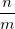 wird verwendet, um den Modulo zu berechnen, und auf  gerundet. Wenn die Eingabe(n) negativ sind, kann sich die Ausgabe von mod unterscheiden (Der Quotient von wird auf 0 gerundet). Beispiele: gerundet. Wenn die Eingabe(n) negativ sind, kann sich die Ausgabe von mod unterscheiden (Der Quotient von wird auf 0 gerundet). Beispiele:-
mod(5,-3) gibt -1 aus.
-
mod(col(a),col(b)) gibt den ganzzahligen mod2 des Werts in col(a) geteilt durch den Wert in col(b) aus.
|
| nint(x) |
Nimmt ein doppeltes x und rundet es auf/ab auf die nächste ganze Zahl. Die Funktion nint(x) gibt das gleiche Ergebnis als round(x, 0) aus. |
| permut(n, k) (2019 SR0)
|
Gibt die Anzahl der Permutationen für festgelegte k Elemente von einem gegebenen Satz von n Elementen aus. Beispiele:-
permut(4, 2) gibt 12 aus.
|
| prec(x, n) |
Nimmt einen Wert oder einen Datensatz, gibt diesen mit n signifikanten Ziffern aus. Beispiele:-
x = 1234567; prec(x, 3) gibt 1230000 aus.
-
prec(col(b), 3) weist die Werte in col(b) zur Zielspalte zu 3 signifikanten Ziffern zu.
|
| product(vd) |
Multipliziert alle Zahlen aus vd und gibt das Produkt aus. Beispiele:
|
| rmod(x, y) |
Gibt den realen Modulo des doppelten x geteilt durch das doppelte y aus (Quotient wird auf 0 gerundet). Quotient von wird auf gerundet. Beispiele:-
rmod(4.5, 2) gibt 0.5 aus.
-
rmod(col(a),3) gibt das rmod von col(a) geteilt durch 3 aus.
|
| rmod2(x, y) |
Gibt den realen Modulo des doppelten x geteilt durch das doppelte y aus (Quotient wird auf minus unendlich gerundet). Quotient von wird auf gerundet. Beispiele:-
rmod2(-4.5, 2) gibt 1.5 aus.
-
rmod(col(a),3) gibt das rmod2 von col(a) geteilt durch 3 aus.
|
| round(x, n) |
Nimmt einen Wert oder Datensatz, gibt den Wert oder Datensatz auf n Dezimalstellen aus. Hinweis: Origin 9.1 führte einen neuen Rundungsalgorithmus ein. Systemvariable @RNA wechselt zwischen alten und neuen Methoden (altes Verhalten ist @RNA=0; neues Verhalten ist @RNA=1 (Standard)). Beispiele:-
round(1.156, 1) gibt 1.2 aus.
-
round(col(a),2) gibt die Werte in col(a), gerundet auf 2 Dezimalstellen, aus.
|
| sign(x) |
Nimmt eine reale Zahl x und gibt das Vorzeichen aus. Wenn x > 0, wird 1 ausgegeben; wenn x < 0, wird -1 ausgegeben; wenn x = 0, wird 0 ausgegeben. |
| sqrt(x) |
Nimmt ein doppeltes x und gibt die Quadratwurzel aus. |
| Derivative(vd[,n]) |
Nimmt einen Vektor vd, gibt die Ableitung der Datenliste aus. Es wird keine Glättung durchgeführt. Die Option n ist die Ableitungsordnung (Standard = 1). |
| DerivativeXY(vx, vy [, n]) |
Nimmt zwei Vektoren vx und vy, gibt die Ableitung der Kurve aus. Die Option n ist die Ableitungsordnung (Standard = 1). |
| Integral(integrand,lowerlimit,upperlimit[, arg1, arg2, ...]) |
Führt einen Dimensionsintegrationswert durch und gibt den Integralwert aus. dt")
|
| Integrate(vd) |
Die Fläche unter einer Kurve wird integriert. Verwendet die Trapezregel. |
| IntegrateXY(vx, vy) |
Integriert die Fläche unter der Kurve (vx, vy). Der Vektor vx enthält die x-Koordinaten der Kurve; vy enthält die y-Koordinaten. |
| Interp(x,vX,vY[,method,bound,smooth,extrap]) (2015 SR0)
|
Nimmt die x-Koordinaten vx und y-Koordinaten vy und interpoliert/extrapoliert eine y-Koordinate bei einer gegebenen Koordinate x. Die Option method = 0 (linear, Standard), 1 (kubische Spline), 2 (kubische B-Spline), 3 (Akima-Spline). Wenn method = 1, kann bound gleich 0 (natürlich) oder 1 (Not-a-Knot) sein. When method = 2, ist smooth = nicht negativer Wert für Glättung. Die Option extrap kann angewendet werden, wenn die X-Werte sich außerhalb der Referenzbereichs befinden: 0 (Standard) = Y mit Hilfe von zwei Punkten extrapolieren; 1 = alle Y als fehlende Werte festlegen; 2 = den Y-Wert des nächsten eingegebenen X verwenden. |
| permutationa(n, k) (2019 SR0)
|
Gibt die Anzahl der Permutationen (mit Wiederholungen) für festgelegte k Elemente von einem gegebenen Satz von n Elementen aus. Beispiele:-
permutationa(4, 2) gibt 16 aus.
|
| Name |
Brief Description |
| acos(x) |
Gibt den Arkuskosinus von x aus. Wenn x < -1 oder x > 1, wird der fehlende Wert ("--") ausgegeben. |
| acosh(x) |
Gibt den inversen hyperbolischen Kosinus von x aus. Wenn x < -1, wird der fehlende Wert ("--") ausgegeben. |
| acot(x) |
Gibt den Arkustangens von x aus. Die Eingabe von x kann jeder Wert sein. Die Werte werden im ersten oder zweiten Quadranten ausgegeben. |
| acoth(x) |
Gibt den inversen hyperbolischen Kotangens von |x| > 1 aus. |
| acsc(x) |
Gibt den Arcuscosekans von |x| aus. Wenn |x| < 1 ist, wird der fehlende Wert ("--") ausgegeben. Die Werte werden im ersten oder vierten Quadranten ausgegeben. |
| acsch(x) |
Gibt den inversen hyperbolischen Cosekans von x aus. Wenn x = 0 oder x > ~3E153, wird der fehlende Wert ("--") ausgegeben. |
| angle(x, y) |
Gibt den Winkel (Radiant), gemessen zwischen der positiven X-Achse und der Linie, die den Punkt (x,y) und den Ursprung (0,0) verbindet, aus. |
| Angleint1(px1, py1, px2, py2 [, unit, direction]) |
Nimmt zwei Paare von xy-Koordinaten, gibt den Winkel zwischen der Linie, die von zwei Punkten und der X-Achse definiert wird, aus. Die Option unit: 0 = Standard Radiant) oder 1 (Grad); die Option direction: 0 (Standard) beschränkt den ausgegebenen Winkelwert auf den ersten (+x,+y) und vierten (+x,-y) Quadranten; oder 1 gibt die Werte von 0–2pi Radiant oder 0–360 Grad aus. Beispiele:-
angleint1(1,1,3,3,1) gibt 45 aus.
-
angleint1(col(a),col(b),col(c),col(d),1,1) gibt den Winkel in Grad (0 - 360) zwischen der Linie, die von zwei xy-Koordinatenpaaren definiert wird, und der X-Achse aus.
|
| Angleint2(px1, py1, px2, py2, px3, py3, px4, py4 [, unit, direction]) |
Gibt den Winkel zwischen zwei Linien aus, eine mit den Endpunkten (px1, py1) und (px2, py2), die andere mit den Endpunkten (px3, py3) und (px4, py4). Wenn die Option unit = 0 (Standard), wird Radiant ausgegeben; wenn unit = 1, wird Grad ausgegeben. Die Option direction legt die Richtung der Ausgabewerts fest. Wenn die Option direction = 0 (Standard), beschränkt sich der ausgegebene Winkelwert auf den ersten (+x,+y) und den vierten (+x,-y) Quadranten; wenn direction = 1, werden Werte von 0–2pi Radiant oder 0–360 Grad ausgegeben. Beispiele:-
angleint2(0,0,1,0,0,1,0,0,1,1) gibt 90 aus.
-
angleint2(col(a),col(b),col(c),col(d),col(e),col(f),col(g),col(h),1,1) gibt den Winkel (Grad, 0 - 360) zwischen zwei Linien, die durch die Endpunkte col(a) - col(h) definiert werden, aus.
|
| asec(x) |
Gibt den Arcussekans von x aus. Wenn |x| < 1 ist, wird der fehlende Wert ("--") ausgegeben. Die Werte werden im ersten oder zweiten Quadranten ausgegeben. |
| asech(x) |
Gibt den inversen hyperbolischen Sekans von x aus. 0 < x ≤ 1. Andere Werte von x geben einen fehlenden Wert ("--") aus. |
| asin(x) |
Gibt den Arkussinus von x aus. -1 ≤ x ≤ 1. Andere Werte von x geben einen fehlenden Wert ("--") aus. |
| asinh(x) |
Gibt den inversen hyperbolischen Sinus von x (jede reale Zahl) aus. |
| atan(x) |
Gibt den Arkustangens von x (jede reale Zahl) aus. � |
| atan2(y,x) |
Nimmt die Koordinaten x,y (Doubles), gibt den Winkel zwischen der positiven X-Achse und dem Punkt (x,y) aus. Eine Variation der Funktion atan(x). Gibt den Wert zwischen -π und π aus. Winkel ist (+) für Winkel gegen den Uhrzeigersinn (y > 0) und (-) für Winkel im Uhrzeigersinn (y < 0). |
| atanh(x) |
Gibt den inversen hyperbolischen Tangens von x aus. -1 < x < 1. Andere Werte von x geben einen fehlenden Wert ("--") aus. |
| cos(x) |
Gibt den Kosinus von x aus. |
| cosh(x) |
Gibt den hyperbolischen Kosinus von x aus. |
| cot(x) |
Gibt den Kotangens von x aus. |
| coth(x) |
Gibt den hyperbolischen Kotangens von x aus. Der Wert x ist eine beliebige Zahl, die nicht Null ist. Beachten Sie, dass die Zahlen des absoluten Werts > 710 (ca.) einen fehlenden Wert ("--") ausgeben. |
| csc(x) |
Gibt den Cosekans von x aus. Wenn x = 0, wird der fehlende Wert ("--") ausgegeben. |
| csch(x) |
Gibt den hyperbolischen Kosekans von x aus. Der Wert x ist eine beliebige Zahl, die nicht Null ist. Hinweis: Wenn x > 710 (ca.), wird ein fehlender Wert ("--") ausgegeben. |
| Degrees(angle) |
Nimmt angle in Radiant und gibt Grad aus. |
| Radians(angle) |
Nimmt angle in Grad und gibt Radiant aus. |
| secant(x) |
Gibt den Sekans von x aus. Hinweis: Verwechseln Sie diese Funktion nicht mit der Funktion sec(), die den Sekundenwert eines Datums ausgibt. |
| sech(x) |
Gibt den hyperbolischen Sekans von x aus. Beachten Sie, dass die Zahlen des absoluten Werts > 710 (ca.) einen fehlenden Wert ("--") ausgeben. |
| sin(x) |
Gibt den Sinus von x aus. |
| sinh(x) |
Gibt den hyperbolischen Sinus von x aus. |
| tan(x) |
Gibt den Tangens von x aus. |
| tanh(x) |
Gibt den hyperbolischen Tangens von x aus. |
...aber bedenken Sie, dass numerische Werte, die einem gegebenen Kalenderdatum entsprechen, sich zwischen den Systemen unterscheiden:
| Name |
Brief Description |
| AddDay(vv) (2021)
|
Nimmt einen Zeitvektor vv und gibt Daten mit einem hinzugefügten Tag aus, wenn die Stunden nach 24 beendet werden. Beispiele:-
addday(col(A)) fügt Tagesinformationen zu den Zeitdaten in col(A) hinzu und gibt Datums- und Zeitdaten aus.
|
| Date(MM/dd/yyHH:mm:ss.##[,format$]) |
Nimmt eine Zeichenkette für Datum-Zeit und gibt das Julianische Datum aus. Wenn format$ nicht festgelegt ist, wird die Zeichenkette mit Hilfe des Kurzdatumsformats des Systems interpretiert. Kann die Werte 1 = Standard (MM/dd/yyyy) , 2 (dd/MM/yyyy) oder 3 (yyyy/MM/dd) nehmen, um das Format für den Datumsteil des ersten Arguments zu steuern, ohne die Zeichenkette format$ festzulegen. Beispiele:-
date(24-09-2009,"dd-MM-yyyy") gibt 2455098 aus.
-
date(3/5/14) gibt 2456721 (US) aus, aber date(5/3/14) gibt 2456721 (UK) aus.
-
date(2/1/1986 13:13, 2) gibt 2446432.5506944 aus, aber date(2/1/1986 13:13, 1) gibt 2446462.5506944 aus.
-
date(col(a)) gibt ein Julianisches Datum für die Datum-Zeit-Zeichenkette in col(a) aus.
|
| Date(yy,MM,dd) |
Nimmt doppelte yy als Jahr, mm als Monat, dd als Tage und gibt das Julianische Datum aus. Beispiele:-
date(20,8,31) gibt 2459092 aus.
|
| Date2str(d,format$)$ |
Nimmt ein Julianisches Datum und gibt eine Datumszeichenkette aus. Beispiele:-
date2str(2456573.123, "dd/MM/yyyy HH:mm")$ gibt 08/10/2013 02:57) aus.
-
date2str(col(b), "dd/MM/yyyy HH:mm")$ gibt eine Datumszeichenkette im Format "dd/MM/yyyy HH:mm" aus.
|
| DatePart(datepart$, d [, n]) (2016 SR1)
|
Nimmt ein Julianisches Datum (doppelt) d und gibt einen Teil des Datums, der durch datepart$ festgelegt wurde, als Double aus. Die Option n legt den Anfang der Woche für datepart$ = w or ww fest. Beispiele:-
datepart("yyyy", 2457360.5107885) gibt 2015 aus.
-
datepart("yyyy", A) gibt den Jahresanteil der Datum-/Zeitdaten in Spalte A aus.
-
datepart("y", Today())=; gibt die Tagszahl des aktuellen Jahres (z. B. ob today() = 2457363 = 12/7/2015 = 341).
-
datepart("w", 2457360.5107885, 1)=; gibt 6, aber datepart(w, 2457360.5107885)=; gibt 5 aus.
|
| Day(d[,n]) |
Nimmt ein Julianisches Datum, gibt die Tageszahl aus. Wenn Option n = 1, wird 1 bis 31 (Monat) ausgegeben; wenn n = 2, wird 1 bis 366 (Jahr) ausgegeben. Beispiele:- (
Day(2454827.5982639, 2) gibt 362 aus.
-
day(col(b),1) nimmt ein Julianisches Datum und gibt den Tag des Monats aus.
|
| Hour(d) |
Nimmt einen Julianischen Wert, gibt die Stunde als eine ganze Zahl aus. Gibt 0 bis 23 (0 = 12:00 A.M., 23 = 11:00 P.M.) aus. Beispiele:-
Hour(0.6997854) gibt 16 aus.
-
hour(col(b)) gibt die Stunde des Julianischen Datums in col(b) aus.
|
| Minute(d) |
Nimmt ein Julianisches Datum, gibt die Minuten als eine ganze Zahl aus (0 bis 59). Beispiele:-
Minute(2454827.5982639) gibt 21 aus.
-
minute(col(b)) gibt die Minute aus dem Julianischen Datums in col(b) aus.
|
| Month(d) |
Nimmt ein Julianisches Datum, gibt den Monat als eine ganze Zahl aus (0 bis 12). Beispiele:-
month(2454821) gibt 12 aus.
-
month(col(b) gibt den Monat des Julianischen Datums in col(b) aus.
|
| MonthName(d[,n])$ |
Nimmt ein Julianisches Datum, gibt den Monatsnamen aus. Monatsformat festgelegt durch die Option n: 1 = einzelnes Zeichen; 3 (Standard) = 3 Zeichen; 0 = voller Monatsname; -1 = 3 englisches Zeichen, unabhängig von den Spracheinstellungen. Beispiele:-
MonthName(2454827.5982639, 0)$ gibt December aus.
-
monthname(col(b),0)$ gibt den vollen Monatsnamen für das Julianische Datum in col(b) aus.
|
| Now() |
Gibt das/die aktuelle Datum-Zeit als Julianisches Datum aus. Beispiele:-
time2str(now()-date(col(a)),"HH:mm")$ gibt eine Zeitzeichenkette (HH:mm) aus, die zwischen der aktuellen Zeit und der Datumszeichenkette in col(a) abgelaufen ist.
|
| Quarter(d) |
Nimmt ein Julianisches Datum, gibt ein Jahresviertel aus. Beispiele:-
Quarter(2454829.5745718) gibt 4 aus.
-
quarter(col(b)) gibt das Viertel des Julianischen Datums in col(b) aus.
|
| Second(d[,n]) |
Nimmt ein Julianisches Datum oder eine reale Zahl, gibt die Sekunden als einen realen Wert im Bereich 0 bis 59,9999 aus. Die Option n = 0 zeigt mehr als 3 Dezimalstellen an, die Präzision des Julianischen Datums ist jedoch auf 0,0001 Sekunden beschränkt, wenn auf die vierte Dezimalstelle gerundet wurde. Beispiele:-
second(2454827.5982639) gibt 30.001 aus.
-
second(2454827.5982639, 0) gibt 30.000942349434 aus.
-
second(A) gibt die Sekunden der Julianischen Daten in col(a) aus.
|
| Time(HH,mm,ss) und Time(HH:mm:ss[,Format$]) |
Nimmt entweder HH,mm,ss oder eine benutzerdefinierte Datum-Zeit-Zeichenkette (HH:mm:ss = Standard) und gibt das Julianische Datum aus. Optional legt das Argument Format$ das benutzerdefinierte Zeichenkettenformat fest. Beispiele:-
time(20:50:25) gibt 0.8683449 aus; time("2 20,50,25", "DDD hh,mm,ss") gibt 2.8683449 aus.
-
time(col(a)) gibt die Julianischen Datumswerte für die Zeitdaten aus, die als HH:mm:ss in col(a) formatiert sind.
|
| Time2str(d,format$)$ |
Nimmt ein Julianisches Datum, gibt eine Zeichenkette der Zeit eines festgelegten Formats aus. Beispiele:-
time2str(0.1875, "HH:mm")$ gibt 04:30 aus.
-
time2str(col(b),"DDD:HH")$ gibt eine Zeichenkette der Zeit aus, die als DDD:HH formatiert ist.
|
| Today() |
Gibt das aktuelle Datum als ein Julianisches Datum aus. |
| UnixTime(d1[, d2, n]) (2021)
|
Konvertieren Sie Unix-Zeitstempelwerte in Julianische Datumswerte. Falls der optionale Parameter n = 0 (Standard), wird d1 (Unix-Zeitstempel) in ein Julianisches Datum verwandelt; falls n = 1, wird d1 (Julianisches Datum) in einen Unix-Zeitstempel verwandelt. Der optionale Parameter d2 ist der Versatz für die Zeitzone. Beachten Sie, dass Sie beim Konvertieren eines Julianischen Datums in einen Unix-Zeitstempel beide optionale Parameter festlegen müssen (falls kein Versatz, d2 = 0). Einheit der Unix-Zeitstempel = Sekunden. Beispiele:-
unixtime(0) gibt einen korrigierten Julianischen Datumswert von 2440587 aus.
-
unixtime(2459011.27604,0,1) gibt einen Unix-Zeitstempel von 1591857450 aus.
|
| WeekDay(d[,n]) |
Nimmt ein Julianisches Datum, gibt den Wochentag aus. Die Option n legt Wochenanfang und -ende fest: 0 (Standard) = Sonntag (0-6), 1 = Sonntag (1-7), 2 = Montag (0-6) oder 3 = Montag (1-7). Beispiele:-
weekday(2454825, 1) gibt 5 aus.
-
weekday(col(b)) nimmt Julianische Datumswerte in col(b) und gibt den Wochentag als eine Zahl aus.
|
| WeekDayName(d[,n1,n2])$ |
Nimmt ein Julianisches Datum (einschließlich Zeit) oder eine durch n2 definierte Zahl, gibt den Wochentag aus. Die Option n1 steuert die Länge der Ausgabezeichenkette: -1 = 3 Char Cap; 0 = voller Name, 1. Cap; 1 = 1 Char Cap; 3 (Standard)= 3 Char, 1. Cap. Die Option n2 steuert die Werte für Wochenanfang und -ende: 0 = 0(Sun) - 6(Sat); 1 = 1(Sun) - 7 (Sat); 2 = 0(Mon) - 6(Sun); 3(default) = 1(Mon) - 7(Sat). Beispiele:-
WeekDayName(2454825,-1,0)$ gibt THU aus.
-
weekdayname(col(b),3,0)$ gibt den Namen des Wochentags, formatiert mit 3 Zeichen, 1. Buchstaben-Cap.
|
| WeekNum(d[,n]) |
Nimmt ein Julianisches Datum, gibt die Kalenderwochenzahl des Jahres (1 bis 53). Die Option zum Festlegen des Wochenanfangs (Sonntag vs. Montag). Beispiele:-
weeknum(date(1/11/2009)) gibt 3 aus.
-
weeknum(date(col(c))) nimmt eine Spalte der Datumsdaten, formatiert als "MM/dd/yyyy" (col(c)), interpretiert diese mit Hilfe der Funktion date() als ein Julianisches Datum und gibt dann mittels der Funktion weeknum() eine Wochenzahl aus.
|
| Year(d) |
Nimmt ein Julianisches Datum, gibt das Jahr als eine ganze Zahl aus (0100-9999). Beispiele:-
year(2454821) gibt 2008 aus.
-
weeknum(date(col(c))) nimmt eine Spalte der Datumsdaten, formatiert als "MM/dd/yyyy" (col(c)), interpretiert diese mit Hilfe der Funktion date() als ein Julianisches Datum und gibt dann das vierstellige Jahr aus.
|
| YearName(d[,n])$ |
Nimmt ein Julianisches Datum, gibt das Jahr als Zeichenkette aus. Die Form der Zeichenkette wird durch die Option n festgelegt: 0 = 2 Stellen, 1 (Standard) = 2 Stellen mit einem vorangestelltem Apostroph oder 2 = 4 Stellen. Beispiele:-
YearName(2454827.5982639, 1)$ gibt '08 aus.
-
weeknum(date(col(c))) nimmt eine Spalte der Datumsdaten, formatiert als "MM/dd/yyyy" (col(c)), interpretiert diese mit Hilfe der Funktion date() als ein Julianisches Datum und gibt dann das zweistellige Jahr aus.
|
| Name |
Brief Description |
| fftamp(cx [,side]) (2015 SR1)
|
Nimmt einen komplexen Vektor cx (normalweise das komplexe FFT-Ergebnis), gibt die Amplitude aus. Die Option side definiert das Ausgabespektrum (1 = einseitig, 2 = zweiseitig und Verschiebung). Beispiele:-
fftamp(fftc(col(B)), 2) gibt die Amplitude des komplexen FFT-Ergebnisses (zweiseitig) des Eingabesignals in Spalte B aus.
-
col(C) = col(B)-mean(col(B)); fftamp(fftc(col(C))) gibt das Amplitudenergebnis mit entfernter DC-Verschiebung (einseitig) aus.
|
| fftc(cx) (2015 SR1)
|
Nimmt einen Vektor cx, gibt das komplexe FFT-Ergebnis aus. Beachten Sie, dass der Datentyp der Ausgabespalte vorher auf komplex (16) gesetzt werden muss. Beispiele:-
fftc(col(B)) gibt das komplexe FFT-Ergebnis des Eingabesignals in Spalte B aus.
-
fftc(rSignal) gibt das komplexe FFT-Ergebnis des Eingabesignals in Bereich variable rSignal aus.
|
| fftfreq(time, n[, side , shift]) (2015 SR1)
|
Nimmt das Abtastintervall time und die Signalgröße n, gibt die Frequenzen für das FFT-Ergebnis aus. Die Option side definiert das Ausgabespektrum (1 = einseitig, 2 = zweiseitig), Verschiebung und ob die Verschiebung zu beiden Seiten stattfindet. ( 0 = keine Verschiebung, 1 = Verschiebung). Beispiele:-
fftfreq(0.001, 100) gibt einen Datensatz von 0 bis 500 mit dem Intervall 10 (einseitig, keine Verschiebung) aus.
-
fftfreq(0.01, 100, 2, 1) gibt die zweiseitige und verschobene Frequenz für das Abtastintervall 0,01 aus.
|
| fftmag(cx [,side]) (2015 SR1)
|
Nimmt einen komplexen Vektor cx (normalerweise das komplexe FFT-Ergebnis), gibt den Betrag aus. Die Option side definiert das Ausgabespektrum (1 = einseitig, 2 = zweiseitig und Verschiebung). Beispiele:-
fftmag(fftc(col(B)), 2) gibt den Betrag des komplexen FFT-Ergebnisses (zweiseitig) des Eingabesignals in Spalte B aus.
-
col(C) = col(B)-mean(col(B)); fftmag(fftc(col(C))) gibt das Betragsergebnis mit entfernter DC-Verschiebung (einseitig) aus.
|
| fftphase(cx[, side, unwrap, unit]) (2015 SR1)
|
Nimmt einen komplexen Vektor cx (normalerweise das komplexe FFT-Ergebnis), gibt die Phase aus. Die Option side definiert das Ausgabespektrum (1 = einseitig, 2 = zweiseitig und Verschiebung), unwrap defininiert, ob der Phasenwinkel nicht umhüllt werden soll (0 = umhüllen, 1 = nicht umhüllen), unit definiert die Einheit (0 = Radiant, 1 = Grad). Beispiele:-
fftphase(fftc(col(B))) gibt die Phase des komplexen FFT-Ergebnisses (einseitig, nicht umhüllt, in Grad) des Eingabesignals in Spalte B aus.
-
fftphase(fftc(col(B)), 2, 0, 0) gibt die Phase des komplexen FFT-Ergebnisses (zweiseitig, umhüllt, in Radiant) des Eingabesignals in Spalte B aus.
|
| fftshift(cx) (2015 SR1)
|
Nimmt einen komplexen Vektor cx (normalerweise das komplexe FFT-Ergebnis oder die Frequenz), gibt den verschobenen Vektor aus. Beachten Sie, dass der Datentyp der Ausgabespalte vorher auf komplex (16) gesetzt werden muss. Beispiele:-
fftshift(fftc(col(B))) gibt einen verschobenen komplexen Vektor aus.
|
| ifftshift(cx) (2015 SR1)
|
Nimmt einen komplexen Vektor cx (normalerweise das verschobene FFT-Ergebnis), gibt einen nicht verschobenen Vektor aus. Beachten Sie, dass der Datentyp der Ausgabespalte vorher auf komplex (16) gesetzt werden muss. Beispiele:-
ifftshift(col(B)) gibt einen nicht verschobenen Vektor aus, bei dem Spalte B einen komplexen Vektor mit Verschiebung enthält.
|
| invfft(cx) (2015 SR1)
|
Nimmt einen komplexen Vektor cx (normalerweise das komplexe FFT-Ergebnis), gibt das inverse FFT-Ergebnis aus. Beachten Sie, dass der Datentyp der Ausgabespalte vorher auf komplex (16) gesetzt werden muss. Beispiele:-
invfft(ifftshift(col(B))) gibt das inverse FFT-Ergebnis für das verschobene komplexe FFT-Ergebnis in Spalte B aus.
|
| windata(type, n) (2015 SR1)
|
Nimmt ganze Zahlen von type (Fenstertyp) und n (Fenstergröße), gibt das Fenstersignal als einen Vektor der Größe n aus. Beispiel:-
windata(2, 50) gibt das dreieckige Fenstersignal mit der Vektorgröße 50 aus.
|
| Name |
Brief Description |
| Count(vd[,n]) |
Nimmt einen Vektor vd, gibt die Anzahl der Elemente aus. Die Option n legt das Element fest: 0 (Standard) = alle; 1 = numerisch; 2 = fehlend; 3 = Fehlende ausschließen. Beispiel:-
count(col(a),2) könnte 22 für die Zahl der fehlenden Werte ausgeben.
-
count(col(a),3) könnte 155 für die Zahl der Werte - fehlende Werte ausgeben.
|
| Max(vd) |
Nimmt einen Vektor vd, gibt den maximalen Wert aus. Beispiel:-
max(col(A)) gibt den maximalen Wert in col(A) aus.
-
max(1,2,3,4,9) gibt 9 aus.
|
| Mean(vd) |
Nimmt einen Vektor vd, gibt den Durchschnitt aus. Beispiel:-
mean(col(A)) gibt den Wert des Durchschnitts von col(A) aus.
Hinweis: Wenn Sie den Durchschnitt von mehreren Datensätzen pro Zeile berechnen wollen, können Sie die Syntax sum(vd)_mean verwenden.
-
sum(A:D)_mean wird zum Berechnen des Mittelwerts von col(A) bis col(D) pro Zeile verwendet.
Siehe weitere Informationen unter die Funktion sum(vd).
|
| Median(vd[,method]) |
Nimmt einen Vektor vd, gibt den Median aus. Die Option Method legt die Interpolationsmethode fest: 0 (Standard) = empirische Verteilung mit Durchschnitt; 1 = nächster Nachbar; 2 = empirische Verteilung; 3 = gewichteter Durchschnitt rechts; 4 = gewichteter Durchschnitt links; 5 = Tukey Hinges). Beispiel:-
median(col(A),2) gibt den Median aus (wie mit Hilfe der Methode bestimmt = 2). Weiteres zu Interpolationsmethoden finden Sie unter Interpolation der Quantile.
|
| Min(vd) |
Nimmt einen Vektor vd, gibt den minimalen Wert aus. |
| Ss(vd [,ref]) |
Nimmt einen Vektor vd, gibt die Summe der Quadrate aus. Die Summe der Quadrate wird berechnet, nachdem ein Referenzwert ref von jedem Wert in vd subtrahiert wurde. Die Option ref setzt den Mittelwert von vd als Standard, ref kann aber eine Konstante, ein Datensatz oder eine Funktion sein. Beispiel:-
ss(vd) gibt die Summe der Quadrate mit subtrahiertem Mittelwert aus.
-
ss(vd,4) gibt die Summe der Quadrate aus, berechnet nachdem 4 von jedem Mitglied von vd subtrahiert wurde.
-
ss(vd1,vd2) gibt die Summe der Quadrate aus, berechnet nachdem jedes Mitglied von vd2 von dem entsprechenden Mitglied von vd1 subtrahiert wurde.
-
AA = 1; BB = 2; ss(vd, AA+BB*x) gibt die Summe der Quadrate aus, berechnet nachdem die Linie, die durch 1+2x beschrieben wird, von vd subtrahiert wurde.
|
| StdDev(vd) |
Nimmt einen Vektor vd, gibt die Standardabweichung der Stichprobe aus. Beispiel:-
StdDev(col(A)) gibt die Standardabweichung der Stichprobe aus.
|
| StdDevP(vd) |
Nimmt einen Vektor vd, gibt die Standardabweichung der Grundgesamtheit aus. Beispiel:-
StdDevP(col(A)) gibt die Standardabweichung der Grundgesamtheit aus.
|
| Sem(vd) (2020b)
|
Nimmt einen Vektor vd, gibt den Standardfehler aus. Beispiel:-
Sem(col(A)) gibt den Standardfehler aus.
|
| Total(vd) |
Nimmt einen Vektor vd, gibt die Summe der Elemente aus. Beispiel:-
total(col(a)) gibt die Summe aller Datenpunkte in Spalte A aus.
|
| averageif(vd, con$) |
Nimmt einen Vektor vd und ein konditionales con$ und gibt das Mittel der Werte aus, um con$ zu erfüllen. Beispiel:-
col(A) = data(1,32); con$ = col(A) > 5 && col(A) < 10; averageif(col(A), con$)=; gibt 7.5 aus.
|
| Countif(vd,con$) |
Nimmt einen Vektor vd, gibt die Anzahl der Werte aus, die die Bedingung con$ erfüllen. Die Bedingung con$ sollte durch doppelte Anführungszeichen (" ") umschlossen werden.-
countif(col(b),"col(b)>0")=;
-
countif(col(A),"col(A)<10 && col(A)>5")=;
|
| Maxifs(vd,con$) |
Nimmt einen Vektor vd, gibt die maximalen Werte aus, die die Bedingung con erfüllen. Beispiel-
maxifs(col(A), "col(A)>5") gibt das Maximum im Teildatensatz von col(A) größer als 5 aus.
|
| Minifs(vd,con$) |
Nimmt einen Vektor vd, gibt die minimalen Werte aus, die die Bedingung con erfüllen. Beispiel-
minifs(col(A), "col(A)>5") gibt das Minimum in dem Teildatensatz von col(A) größer als 5 aus.
|
| sumif(vd,con$) |
Nimmt einen Vektor vd, gibt die Summe der Werte aus, die die Bedingung con$ erfüllen. |
| Name |
Brief Description |
| Correl(vx, vy) |
Nimmt die Datensätze vx und vy, gibt den Korrelationskoeffizienten aus. Beispiel:-
for(ii=1;ii<=30;ii++) col(1)[ii] = ii; col(2)=ln(col(1)); correl(col(A),col(B))=; gibt 0.92064574677971 aus.
|
| cov(vx, vy[, avex, avey]) |
Nimmt die Datensätze vx und vy und die jeweiligen Mittelwerte avex und avey, gibt die Kovarianz aus. Beispiel:-
for(ii=1;ii<=30;ii++) col(1)[ii] = ii; col(2)=ln(col(1)); cov(col(A),col(B))=; gibt 6.8926313172818 aus.
|
| Forecast(x,vx,vy) |
Nimmt die x-Koordinaten vx und y-Koordinaten vy und führt eine lineare Regression aus, um eine y-Koordinate bei einer gegebenen Koordinate x zu berechnen oder zu prognostizieren. |
| Intercept(vx,vy) |
Nimmt zwei Vektoren vx (unabhängig) und vy (abhängig) und gibt den Schnittpunkt der Y-Achse mit der linearen Regression aus. |
| mae(vobs,vpred) (2023b)
|
Nimmt zwei Vektoren, vobs(Beobachtung) und vpred (Prognose), und gibt den mittleren absoluten Fehler aus. |
| mbe(vobs,vpred) (2023b)
|
Nimmt zwei Vektoren, vobs(Beobachtung) und vpred (Prognose), und gibt den mittleren Bias-Fehler aus. |
| rms(vd) |
Nimmt einen Vektor vd, gibt den quadratischen Mittelwert aus. |
| rmse(vobs,vpred) (2023b)
|
Nimmt zwei Vektoren, vobs(Beobachtung) und vpred (Prognose), und gibt den Fehler der Quadratwurzel des Mittelwerts aus. |
| Slope(vx,vy) |
Nimmt zwei Vektoren, vx (unabhängig) und vy (abhängig), und gibt der Steigung mit der linearen Regression aus. |
| ave(vd, size[, stats]) |
Nimmt einen Vektor vd, gibt einen Bereich der Durchschnitte von jeder Gruppe der Größe aus. stats bietet einen Option zum Ausgeben weiterer Statistikeigenschaften abgesehen vom Durchschnitt. Wenn Elemente von vd kein gerades Mehrfaches von size sind, dann stellt der ausgegebene Durchschnitt nur mod (vdSize,size) Elemente dar. Beispiel:-
ave(col(a),5) teilt col(a) in Gruppen der Größe 5 auf und berechnet einen Durchschnitt für jede Gruppe.
-
ave(A,5,2) teilt col(a) in Gruppen der Größe 5 auf und berechnet eine Standardabweichung für jede Gruppe.
|
| diff(vd[,n]) |
Nimmt einen Vektor vd, gibt einen Bereich der Differenzen zwischen nebeneinander liegenden Elementen aus. Das erste Element im ausgegebenen Bereich ist vd(i+1)-vdi und so weiter. Gibt N-1, N oder N+1 Elemente aus, abhängig von dem Wert des optionalen Parameters n:- 0 = (Standard), gibt N-1 Elemente aus;
- 1 = Mit 0 am Datensatzende auffüllen, gibt N Elemente aus;
- 2 = Mit 0 am Datensatzanfang auffüllen, gibt N Elemente aus;
- 3 = Mit 0 am Datensatzanfang auffüllen, gibt N+1 Elemente aus, wobei Element N+1 ermittelt wird, indem N Elemente summiert werden.
- 4 = Mit NANUM am Datensatzanfang auffüllen, gibt N Elemente aus.
|
| sum(vd) |
Die Funktion sum() hat zwei Modi: Im "Spalten"modus kann sie einen Vektor vd der einzelnen Spalte nehmen und einen Vektor ausgeben, der die Werte der kumulativen Summe (von 1 bis i, i=1,2,...,N) beinhaltet. Sein i+1-tes Element ist die Summer der ersten i Elemente. Das letzte Element des ausgegebenen Bereichs ist die Summe aller Elemente im Datensatz. Beispiel:
Im "Zeilen"modus nimmt sie zwei oder mehr Spalten und gibt einen Vektor mit zeilenweisen Summen aus. Das Syntaxsuffix _mean, _sd, </code>_median</code>, _max, _min, _n kann verwendet werden, um zeilenweise den Durchschnitt, die Standardabweichung, den Median, das Maximum, das Minimum und die Anzahl der numerischen Werte zu erhalten. Beispiel:
-
sum(A:E) addiert die Werte zeilenweise in den Spalten 1 to 5.
-
sum(A:C, D:G, F) addiert die Spalten A bis C, D bis G und F per Zeile.
-
sum(A2:D4)_mean berechnet den Mittelwert des Blocks von A2 bis D4 per Zeile.
Hinweis: Die Syntax dieses "Zeilen"modus wird von Werte setzen und F(x)= unterstützt, ist anders und nicht kompatibel mit der Skriptsprache. Siehe weitere Informationen unter die Funktion sum().
|
| Confidence(alpha, std, size[, dist]) |
Nimmt das Signifikanzniveau alpha, die Standardabweichung der Grundgesamtheit std und den Stichprobenumfang size, gibt das Konfidenzintervall für den Mittelwert der Grundgesamtheit mit Hilfe der Verteilung dist aus. Beispiel:-
confidence(0.05, 1.5, 100) gibt 0.29399459768101 aus.
|
| Geomean(vd) |
Nimmt einen Vektor vd und gibt den geometrischen Mittelwert aus.-
Geomean(col(A)) gibt den geometrischen Mittelwert der Spalte A aus.
|
| Geosd(vd) |
Nimmt einen Vektor vd und gibt die geometrische Standardabweichung aus.-
Geosd(col(A)) gibt die geometrische Standardabweichung der Spalte A aus.
|
| Harmean(vd) |
Nimmt einen Vektor vd und gibt den harmonischen Mittelwert aus.-
Harmean(col(A)) gibt den harmonischen Mittelwert von Spalte A aus.
|
| histogram(vd, inc, min, max) |
Nimmt einen Vektor vd, die Klassenbreite = inc, vd min sowie vd max und erzeugt die Dateneinteilungen. Datenpunkte, die am oberen Rand der Klasse liegen, werden der nächst höheren Klasse zugeordnet. |
| Kurt(vd) |
Nimmt einen Vektor vd, gibt die Kurtosis aus. Beispiel:-
dataset ds = {1, 2, 3, 2, 3, 4, 5, 6, 4, 8}; kurt(ds) gibt 0.39502164502164 aus.
|
| lcl(vd[, level]) |
Nimmt einen Vektor vd, gibt die untere Konfidenzgrenze bei level aus. Beispiel:-
lcl(col(A)) gibt die untere Konfidenzgrenze der Spalte A bei Niveau 0,95 aus.
|
| Mad(vd) |
Nimmt einen Vektor vd, gibt die absolute Abweichung des Mittelwerts aus. Beispiel:-
mad(col(A)) gibt die absolute Abweichung des Mittelwerts von Spalte A aus.
|
| Percentile(vx, vy) |
Nimmt einen Vektor vx, gibt die Perzentilwerte bei jedem Prozentwert, festgelegt in vy, aus. Beispiel:-
DATA1_A = normal(1000); DATA1_B = {1, 5, 25, 50, 75, 95, 99}; DATA1_C = percentile(DATA1_A, DATA1_B); gibt einen Datensatz DATA1_C aus, der die Perzentile einer Normalverteilung bei 1 %, 5 % ... 99 % enthält.
|
| QCD2(n) |
Nimmt einen Stichprobenumfang n, gibt den Faktor der Qualitätskontrolle D2 aus. Beispiel:-
QCD2(4) gibt 2.05875 aus.
|
| QCD3(n) |
Nimmt einen Stichprobenumfang n, gibt den Faktor der Qualitätskontrolle D3 aus. Faktor D3 ist die untere 3-Sigma-Kontrollgrenze im X-quer-R-Diagramm. Beispiel:
|
| QCD4(n) |
Nimmt einen Stichprobenumfang n, gibt den Faktor der Qualitätskontrolle D4 aus. Faktor D4 ist die obere 3-Sigma-Kontrollgrenze im X-quer-R-Diagramm. Beispiel:
|
| Skew(vd) |
Nimmt einen Vektor vd, gibt die Schiefe (Verteilungssymmetrie) aus. Beispiel:-
skew(col(a)) gibt die Schiefe des Datensatzes in column A aus.
|
| ucl(vd[, level]) |
Nimmt einen Vektor vd, gibt die obere Konfidenzgrenze bei level (Standard ist 0,95) aus. Beispiel:-
ucl(col(a)) gibt die obere Konfidenzgrenze der Spalte A bei Niveau 0,95 aus.
|
| Emovavg(vd,n[,method]) |
Nimmt einen Vektor vd und eine ganze Zahl n = Zeitraum, gibt einen Vektor des exponentiellen gleitenden Durchschnitts aus. Die Option method legt fest, wo Berechnungen beginnen: 0 (Standard) = ab Punkt n; 1 = ab 1. Punkt. Beispiel:-
for(ii=1;ii<=30;ii++) col(1)[ii] = ii; col(3)=emovavg(col(1),10, 1); //method II füllt Spalte 3 mit Werten, berechnet mit dem Anfangspunkt = 1.
|
| Mmovavg(vd,n) |
Nimmt einen Vektor vd, eine ganze Zahl n = Zeitraum, und gibt einen Vektor der modifizierten gleitenden Durchschnitte aus. Beispiel:-
for(ii=1;ii<=30;ii++) col(1)[ii] = ii; col(2)=mmovavg(col(1),10); füllt Spalte 2 mit einem modifizierten gleitenden Durchschnittswert bei jedem Punkt, angefangen mit Zeile 10.
|
| Movavg(vd,back,forward[,missing]) |
Nimmt einen Vektor vd und gibt den gleitenden Durchschnitt der angrenzenden Bereiche [i-back, i+forward] für einen Punkt i (i = die aktuelle Zeilennummer) aus. Die Option missing bestimmt, ob fehlende Werte ausgelassen werden sollen. Beispiel:-
for(ii=1;ii<=10;ii++) col(1)[ii] = ii; col(2)=movavg(col(1),0, 2); füllt col(2) mit den angrenzenden Durchschnittswerten bei jedem Punkt (Beachten Sie, dass col(2)[9] = (col(1)[9]+col(1)[10])/2 and col(1)[10] = col(2)[10]).
|
| Movcoef(v1,v2,back,forward[,missing]) |
Nimmt zwei Vektoren v1 und v2 und gibt einen Vektor der gleitenden Korrelationskoeffizienten der angrenzenden Bereiche [i-back, i+forward] für einen Punkt i (i = die aktuelle Zeilennummer) aus. Die Option missing bestimmt, ob fehlende Werte ausgelassen werden sollen. Beispiel:-
wcol(4) = MovCoef(wcol(2), wcol(3), 20, 0);
füllt die 4. Spalte mit gleitenden Korrelationskoeffizienten von col(2) und col(3) innerhalb des Fensters [i-20. i]
|
| Movrms(vd,back[,forward]) |
Nimmt einen Vektor vd und gibt den quadratischen Mittelwert (RMS) der angrenzenden Bereiche [i-back, i+forward] für einen Punkt i (i = die aktuelle Zeilennummer) aus. Beispiel:-
col(B)=movrms(col(A),0, 2); füllt col(B) mit RMS bei jedem Punkt für Daten innerhalb des Fensters [i, i+2]).
|
| Movslope(vx,vy[,n]) |
Nimmt zwei Vektoren, vx (unabhängig) und vy (abhängig), gibt einen Vektor der gleitenden Steigung bei jedem Punkt aus. Optional legt n die Fensterbreite fest (sollte > 1 sein). Wenn n gerade ist, wird 1 addiert. Wenn n nicht festgelegt ist, gibt die Funktion einen Vektor von einem Wert aus, der die Steigung des linearen Fits der Eingabe ist. Beispiel:-
col(C)=movslope(col(A),col(B),5); füllt col(C) mit der Steigung bei jedem Punkt (die ersten und letzten zwei Zellen sind fehlende Werte).
|
| Tmovavg(vd,n[,missing]) |
Nimmt einen Vektor vd und eine ganze Zahl n = Zeitraum, gibt einen Vektor des dreieckigen gleitenden Durchschnitts aus. Die Option missing bestimmt, ob fehlende Werte ausgelassen werden sollen. Beispiel:-
for(ii=1;ii<=30;ii++) col(1)[ii] = ii; col(2)=tmovavg(col(1),9); füllt col(2) mit Werten des dreieckigen gleitenden Durchschnitts bei jedem Punkt, angefangen bei Punkt = 9.
|
| Wmovavg(vd,vw) |
Nimmt einen Vektor vd (zu glättende Daten) und einen Vektor vw (indizierter Gewichtungsfaktor), gibt einen Vektor der gewichteten gleitenden Durchschnitte aus. Beispiel:-
for(ii=1;ii<=30;ii++) col(1)[ii] = ii; //data vector
for(ii=1;ii<=10;ii++) col(2)[ii] = ii/10; //weight vector
col(3)=wmovavg(col(1),col(2));
füllt col(3) mit dem gewichteten gleitenden Durchschnitt bei jedem Punkt aus, angefangen bei Punkt = 10.
|
| Name |
Brief Description |
| betacdf(x,a,b[,tail]) |
Berechnet die kumulative Beta-Verteilungsfunktion bei x, mit den Parametern a und b. a und b müssen positiv sein, und x muss auf dem Intervall [0,1] liegen. tail bestimmt, ob die ausgegebene Wahrscheinlichkeit die untere oder die obere ist. |
| binocdf(k,n,p) |
Berechnet die untere, obere und Punktwahrscheinlichkeit bei einem gegebenen Wert k, verbunden mit einer Binomialverteilung mit Hilfe der entsprechenden Parameter n, p.
|
| bivarnormcdf(x,y,corre) |
Berechnet die untere Wahrscheinlichkeit für die bivariate Normalverteilung.
\\=\frac 1{2\pi \sqrt{1-\rho ^2}}\int_{-\infty }^y\int_{-\infty }^x\exp (\frac{x^2-2\rho XY+Y^2}{2(1-\rho ^2)})dXdY")
|
| chi2cdf(x,df[,tail]) |
Berechnet die untere/obere Wahrscheinlichkeit für die Chi-Quadrat-Verteilung mit realen Freiheitsgraden df. |
| foldnormcdf(x,mu,sigma) |
Berechnet die untere Wahrscheinlichkeit für die gefaltete Normalverteilung. |
| fcdf(f,ndf,fdf[,tail]) |
Berechnet die kumulative F-Verteilung bei f mit Freiheitsgraden der Zählervarianz ndf und Nennervarianz fdf. tail bestimmt, ob die ausgegebene Wahrscheinlichkeit die untere oder die obere ist. |
| gamcdf(g,a,b[,tail]) |
Berechnet die untere/obere Wahrscheinlichkeit für Gammavariate g mit realen Freiheitsgraden mit Hilfe des Formparameters a und des Skalenparameters b. tail bestimmt, ob die ausgegebene Wahrscheinlichkeit die untere oder die obere ist. |
| hygecdf(k,m,n,l) |
Berechnet die unteren Wahrscheinlichkeiten bei einem gegebenen Wert, verbunden mit einer hypergeometrischen Verteilung mit Hilfe der entsprechenden Parameter.
&=P(X\leq k)=\sum_{i=0}^kP(X=i)\\&=\sum_{i=0}^k\frac {{m \choose i}{n-m \choose l-i} }{{n \choose l} }\end{aligned}")
wobei n der Umfang der Grundgesamtheit, m die Anzahl der Erfolgszustände in der Grundgesamtheit und l die Anzahl der gezogenen Stichproben ist.
|
| landaucdf(x,mu,sigma) (2024b)
|
Berechnet die kumulative Dichtefunktion für die Landau-Verteilung bei x und mit Lageparameter Mu und Skalierungsparameter Sigma. |
| logncdf(x,mu,sigma[,tail]) (2015 SR0)
|
Berechnet die Wahrscheinlichkeiten bei einem festgelegten Endtyp tail in einem gegebenen Wert x, verbunden mit einer Lognormal-Verteilung mit Hilfe der entsprechenden Parameter mu und sigma. Untere Wahrscheinlichkeit wird ausgegeben, falls tail nicht angegeben ist. |
| ncbetacdf(x,a,b,lambda) |
Berechnet die cdf mit unterer Wahrscheinlichkeit der nicht-zentralen Beta-Verteilung.
wobei
=\frac{\Gamma (a+b)}{\Gamma (a)\Gamma (b)}\int_0^\beta B^{a-1}(1-B)^{b-1}dB") - , das heißt die Funktion der zentralen Beta-Wahrscheinlichkeit oder die unvollständige Beta-Funktion.
|
| ncchi2cdf(x,f,lambda) |
Berechnet die Wahrscheinlichkeit, die mit der unteren Wahrscheinlichkeit der nicht-zentralen Chi-Quadrat-Verteilung verbunden ist.
\\=P(X\le x: \nu;\lambda)\\=\sum_{j=0}^\infty {e^{-\frac{\lambda}{2}}\frac{{(\lambda/2)}^j}{j!}P(X\le x:\nu+2j;0)}")
wobei ") eine zentrale eine zentrale  mit mit  Freiheitsgraden ist. Freiheitsgraden ist.
|
| ncfcdf(f,df1,df2,lambda) |
Berechnet die Wahrscheinlichkeit, die mit der unteren Wahrscheinlichkeit der nicht-zentralen Digamma- oder der Varianz-Verhältnis-Verteilung verbunden ist.
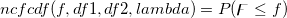=d\digamma") , , wobei ![\begin{aligned}P(\digamma )&=\sum_{j=0}^\infty e^{-\lambda /2}\frac{(\lambda /2)^j}{j!}\cdot\frac{(\nu _1+2j)^{(\nu _1+2j)/2}\nu _2^{\nu _2/2}}{B((\nu _1+2j)/2,\nu _2/2)}\\&\cdot u^{(\nu _1+2j-2)/2}\left[ \nu _2+(\nu _1+2j)u\right] ^{-(\nu _1+2j+\nu _2)/2}\end{aligned}](../images/LabTalk-Supported_Functions/math-eb25f9ef60abdee3860cc90749b36385.png "\begin{aligned}P(\digamma )&=\sum_{j=0}^\infty e^{-\lambda /2}\frac{(\lambda /2)^j}{j!}\cdot\frac{(\nu _1+2j)^{(\nu _1+2j)/2}\nu _2^{\nu _2/2}}{B((\nu _1+2j)/2,\nu _2/2)}\\&\cdot u^{(\nu _1+2j-2)/2}\left[ \nu _2+(\nu _1+2j)u\right] ^{-(\nu _1+2j+\nu _2)/2}\end{aligned}")
und die Beta-Funktion ist.
|
| nctcdf(t,df,delta[,maxiter]) |
Berechnet die untere Wahrscheinlichkeit für die nicht-zentrale Studentsche t-Verteilung.
=P(T\leq t)\\&=C_\nu \int_0^\infty (\frac 1{\sqrt{2\pi }}\int_{-\infty }^{\alpha u-\delta }e^{-x^2}dx)u^{v-1}e^{-u^2/2}du \end{aligned}")
mit
0" alt="C_\nu =\frac 1{\Gamma (\frac 12\nu )2^{(\nu -2)/2}},\ \alpha =\frac t{\sqrt{\nu }},\ \nu >0" class="tex"/>
|
| normcdf(x[,tail]) |
Berechnet die Wahrscheinlichkeiten bei einem festgelegten Endtyp tail in einem gegebenen Wert x, verbunden mit einer kumulativen Normal-Verteilung. |
| poisscdf(k,lambda) |
Berechnet die unteren Wahrscheinlichkeiten bei einem gegebenen Wert k, verbunden mit einer Poisson-Verteilung mit Hilfe der entsprechenden Parameter in lambda.
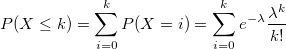
|
| srangecdf(q,v,group) |
Berechnet die Wahrscheinlichkeit, die mit dem unteren Ende der Verteilung der studentisierten Bereichsstatistik verbunden ist.
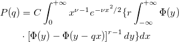 wobei 2^{\nu /2-1}}") , , =\int_{-\infty }^y\frac 1{\sqrt{2\pi }}e^{-t^2/2}dt")
|
| tcdf(t,df[,tail]) |
Berechnet die Wahrscheinlichkeiten des festgelegten Endtyps tail, verbunden mit einer kumulativen Verteilungsfunktion der Studenten-t-Verteilung mit den Freiheitsgraden df. |
| wblcdf(x,a,b) |
Berechnet die untere Wahrscheinlichkeit der kumulativen Weibull-Verteilungsfunktion für den Wert x mit Hilfe der Parameter a und b.
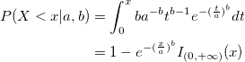 wobei }(x)") das Intervall ist, bei dem die Weibull-CDF nicht null ist. das Intervall ist, bei dem die Weibull-CDF nicht null ist.
|
| Name |
Brief Description |
| betapdf(x,a,b) |
Gibt die Funktion der Wahrscheinlichkeitsdichte der Beta-Verteilung mit den Parametern a und b aus.
mit 0" alt="0\leq B\leq 1;a,b>0" class="tex"/>
|
| binopdf(x,nt,p) (2015 SR0)
|
Gibt die Funktion der Wahrscheinlichkeitsdichte der Binomialverteilung mit den Parametern nt und p aus.
 = \left( \begin{matrix} nt \\ x \end{matrix}\right) p^x (1-p)^{nt-x},")
wobei  und und  . .
|
| cauchypdf(x,a,b) (8,6 SR0)
|
Cauchy-Wahrscheinlichkeitsdichtefunktion (alias Lorentz-Verteilung).
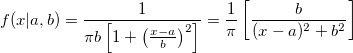
|
| exppdf(x,lambda) (8,6 SR0)
|
Gibt die Funktion der Wahrscheinlichkeitsdichte der Exponentialverteilung mit Ratenparameter lambda aus, ausgewertet bei Wert X.
=\lambda e^{{-x}{\lambda}}, x \geq 0")
|
| foldnormpdf(x,mu,sigma) |
Berechnet die Funktion der Wahrscheinlichkeitsdichte bei jedem der Werte in X mit Hilfe der gefalteten Normalverteilung mit Mittelwert mu und Standardabweichung sigma.
 = \frac{1}{ \sqrt{ 2 \pi } \sigma} e^{ - \frac{(x - \mu)^2}{ 2 \sigma^2 } } + \frac{1}{ \sqrt{ 2 \pi } \sigma} e^{ - \frac{(x + \mu)^2}{ 2 \sigma^2 } }, x \geqslant 0, \; \sigma > 0")
|
| gampdf(x,a,b) (8,6 SR0)
|
Gibt die Gamma-Wahrscheinlichkeitsdichte mit den Parametern a und b aus.
=\frac 1{b^a\Gamma (a)}x^{a-1}e^{\frac{-x}b}")
Um die Skalen- und Formparameter a und b aus einem Datensatz mit Gamma-Verteilung zu ermitteln, können Sie die Schätzungsfunktion gamfit verwenden.
|
| ks2d(vx, vy[,bandwidth, grid, interp, binned]) (2020)
|
Gibt die 2D-Kernel-Dichte bei Punkt (x, y) mit festgelegter Bandbreiten- und Dichtemethode aus, wobei vx ein Vektor der X-Koordinatenwerte und vy ein Vektor der Y-Koordinatenwerte ist. Optionen für Bandbreitenmethode, Gitternetz (nur Bandbreitenmethode), Interpolation und Dichte (nur anwendbar, wenn interp = 1 (wahr)). wobei n die Anzahl der Elemente in Vektor vx oder vy ist, der Index i auf das i-te Element in vx oder vy verweist und optimale Skalen (wx, wy) von der Schätzungsfunktion kernel2width bestimmt werden.
|
| ks2density(x,y,vx,vy,wx,wy) (2015 SR0)
|
Gibt die 2D-Kerneldichte bei Punkt (x, y) aus in Bezug auf eine Funktion, die durch den Datensatz (vx, vy) mit der Skala (wx, wy) errzeugt wurde. wobei n die Anzahl der Elemente in Vektor vx oder vy ist, der Index i auf das i-te Element in vx oder vy verweist und optimale Skalen (wx, wy) von der Schätzungsfunktion kernel2width bestimmt werden.
|
| ksdensity(x,vx,w) (2015 SR0)
|
Gibt die Kerneldichte bei x für einen gegebenen Vektor vx mit einer Bandbreite w aus. wobei n die Größe des Vektors vX und K die Kernelfunktion ist, Origin die normale Kernelfunktion (Gaussian) verwendet, 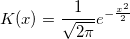, und  das i-te Element im Vektor vX ist. das i-te Element im Vektor vX ist.
|
| landaupdf(x,mu,sigma) (2024b)
|
Berechnet die Funktion der Wahrscheinlichkeitsdichte bei jedem der Werte in X mit Hilfe der Landau-Verteilung mit Lageparameter mu und Skalierungsparameter sigma. |
| lappdf(x,mu,b) (8,6 SR0)
|
Wahrscheinlichkeitsdichtefunktion nach Laplace.
 = \frac{1}{2b} \exp \left( -\frac{|x-\mu|}{b} \right) \,\!") ![= \frac{1}{2b} \left\{\begin{matrix} \exp \left( -\frac{\mu-x}{b} \right) & \mbox{if }x < \mu \\[8pt] \exp \left( -\frac{x-\mu}{b} \right) & \mbox{if }x \geq \mu \end{matrix}\right.](../images/LabTalk-Supported_Functions/math-a5a9b7eb31d29b76b9351919882b5ec3.png "= \frac{1}{2b} \left\{\begin{matrix} \exp \left( -\frac{\mu-x}{b} \right) & \mbox{if }x < \mu \\[8pt] \exp \left( -\frac{x-\mu}{b} \right) & \mbox{if }x \geq \mu \end{matrix}\right.")
|
| lognpdf(x,mu,sigma) (8,6 SR0)
|
Gibt die Werte bei X der Lognormal-Funktion der Wahrscheinlichkeitsdichte mit den Verteilungsparametern mu und sigma aus.
=\frac 1{x\sigma \sqrt{2\pi }}e^{\frac{-(\ln x-\mu )}{2\sigma ^2}}")
|
| normpdf(x,mu,sigma) (8,6 SR0)
|
Berechnet die Funktion der Wahrscheinlichkeitsdichte bei jedem der Werte in X mit Hilfe der Normalverteilung mit Mittelwert mu und Standardabweichung sigma.
|
| poisspdf(x,lambda) (8,6 SR0)
|
Berechnet die Poisson-Funktion der Wahrscheinlichkeitsdichte bei jedem der Werte in X mit Hilfe der Mittelwertparameter in lambda.
=\frac{\lambda ^x}{x!}e^{-\lambda }I_{(0,1,...)}(x)")
|
| wblpdf(x,a,b) (8,6 SR0)
|
Gibt die Funktion der Wahrscheinlichkeitsdichte der Weibull-Verteilung mit den Parametern a und b aus.
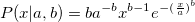 Um die Skalen- und Formparameter a und b aus einem Datensatz mit Weibull-Verteilung zu ermitteln, können Sie die Schätzungsfunktion wblfit verwenden.
|
| Name |
Brief Description |
| Data(x1,x2,inc) |
Nimmt zwei Werte x1 und x2 und erstellt einen Datensatz, der von x1 bis x2 reicht und ein Inkrement inc aufweist. Wenn x1 = x2, gibt die Funktion inc die Anzahl der Punkte mit Werten = x1 aus. Standard für inc = 1. Beispiele: col(A) = data(0,100,5) füllt Spalte A mit Zahlen von 0 bis 100 mit dem Inkrement = 5.-
col(A) = data(10, 10, 5) füllt die ersten fünf Zeilen der Spalte A mit der Zahl 10.
-
col(A) = data(1,100) füllt Spalte A mit Zahlen von 1 bis 100 mit dem Inkrement = 1.
|
| grnd() |
Gibt einen Wert aus einer normalverteilten (Gaussian) Stichprobe aus, inklusive Nullmittelwert und Standardabweichung der Einheit. Der Anfangswert und die Wertesequenz sind die gleiche bei jeder Origin-Sitzung. Es ist kein Argument notwendig. Im Allgemeinen wird die Funktion verwendet, um einen Zufallswert aus einer Normalverteilung mit bekanntem Mittelwert und bekannter Standardabweichung auszugeben mit Hilfe des folgenden Ausdrucks: grnd()*sd+m. Beispiel:-
aa=grnd()*0.30855+0.45701 könnte 0.33882089669989 ausgeben.
|
| normal(npts[,seed]) |
Gibt einen Bereich von npts aus. Die Werte sind Zufallszahlen mit Normalverteilung (Mittelwert null, Einheit Standardabweichung). Wenn seed ausgelassen wird, wird stattdessen bei jedem Aufruf der Funktion eine anderes "Seed" verwendet. Kann verwendet werden, um eine Spalte mit normalverteilten Zufallswerten zu füllen, bei gegebenen Mittelwert und Standardabweichung: normal(npts)*sd+m. Beispiel:-
col(1) = normal(100)*2+5 füllt die Spalte 1 mit 100 Zufallswerten mit dem Mittelwert = 5 und der Standardabweichung = 2.
|
| pattern(vd, onerepeat, seqrepeat) und pattern(x1,x2,inc,onerepeat,seqrepeat) |
Gibt die erzeugten numerischen oder Textdaten mit Muster aus. pattern(vd, onerepeat, seqrepeat) nimmt eine Reihe von Eingabezeichenketten vd und wiederholt jedes Element in vd onerepeat-mal und wiederholt dann die gesamte Zeichenkettenreihe seqrepeat-mal. pattern(x1,x2,inc,onerepeat,seqrepeat) erstellt einen Datensatzbereich von x1 bis x2 mit dem Inkrement inc. Jedes Element im Datensatz wird onerepeat-mal wiederholt. Dann wird der gesamte Datensatz seqrepeat-mal wiederholt. Beachten Sie, dass die Elemente in der Zeichenkettenreihe durch Hochstrich (|), Komma(,) oder Leerzeichen bzw. eine Bereichsvariable getrennt sein können. Beispiel:col(a)=pattern("Origin Lab", 2, 2); füllt Spalte A mit "Origin Origin Lab Lab Origin Origin Lab Lab".col(b)=pattern(1,3,1,2,2); füllt Spalte B mit "1 1 2 2 3 3 1 1 2 2 3 3".
|
| Poisson(n, mean [,seed]) |
Gibt n zufällige ganze Zahlen mit Poisson-Verteilung und Mittelwert aus. Optional bietet seed einen "Seed" für den Zahlenerzeuger. Beispiel:-
col(1)=Poisson(100,5,1) füllt Spalte 1 mit 100 Zufallswerten mit Poisson-Verteilung und einem Mittelwert von 5.
|
| ran([seed]) und rnd([seed]) |
Gibt einen Wert zwischen 0 und 1 aus einer gleichverteilten Stichprobe aus. Wenn die Option seed positiv ist, wird das "Seed" festgelegt und 0 ausgegeben. Wenn seed ≤ 0 ist oder wenn kein Argument bereitsteht, wird die nächste Zahl in der Sequenz der Zufallszahlen ausgegeben. |
| uniform(npts [,seed]) und uniform(npts, vd) |
Gibt einen Bereich von npts aus. Die Option seed kann ein Wert, ein Datenbereich, getrennte Zeichenketten ("|", "," oder Leerzeichen) oder eine Zeichenketten-Array sein. Wenn seed ein Wert ist, werden gleichverteilte Zufallszahlen ausgegeben. Wenn seed ein Datenbereich oder ein Zeichenketten-Array ist, werden die ausgegebenen Werte zufällig aus dem Datenbereich oder den Zeichenketten gewählt. Wenn seed ausgelassen wird, wird stattdessen bei jedem Aufruf der Funktion eine anderes "Seed" verwendet. Diese Funktion akzeptiert auch einen Vektor vd als Argument. |
| Name |
Brief Description |
| Category(vd)$ (2020b)
|
Nimmt einen Vektor vd der kategorialen Daten und gibt alle Kategorien in einer Arbeitsblattspalte aus. Kategorienreihenfolge folgt der Quellspalte. Beispiele:-
category([automobile]automobile!Make); // Set Values dialog form, "$" optional
-
range rA = [automobile]automobile!col(b); col(b) = category(rA)$; // LT script form, "$" needed
|
| Catindex(vd) (2020b)
|
Nimmt einen Vektor vd der kategorialen Daten und gibt den Kategorienindex für jeden seiner Elemente in einer Arbeitsblattspalte aus. Beispiele:
|
| Catrows(vd[,option])$ (2024b)
|
Nimmt einen Vektor vd der kategorialen Daten und gibt eine mit senkrechtem Strich getrennte Liste aller Zeilenindizes nach Kategorie aus. Optionale Option bestimmt die Ausgabe von allen/erstem/letzten Index für jede Kategorie. Kategorienreihenfolge folgt der Quellspalte. Beispiele:-
catrows([automobile]automobile!B); // Set Values dialog form, "$" optional
-
range rA = [automobile]automobile!col(b); col(b) = catrows(rA)$; // LT script form, "$" needed
|
| Cattext(n,vd)$ (2020b)
|
Nimmt einen Vektor vd der kategorialen Daten und gibt den n-ten Kategoriewert aus. Beispiele:-
cattext(H,B); // Set Values dialog form, "$" optional
-
range rA = [automobile]automobile!col(b); col(b) = cattext(col(a),rA)$; // LT script form, "$" needed
|
| Findmasks(vd) |
Nimmt einen Vektor vd, der maskierte Daten enthält, und gibt einen Vektor der Indizes der maskierten Punkte aus. Beispiel:-
dataset aa=findmasks(col(b)); col(d)=aa füllt die Spalte D mit den Zeilenindizes der maskierten Daten in Spalte B.
|
| Firstpoint(vd) |
Nimmt einen Vektor vd, gibt den ersten Wert des Datensatzes vd aus. Beispiel:-
aa = firstpoint(col(A)); ermittelt den ersten Wert der Spalte A und weist ihn Variable aa zu.
|
| Idx(vBool) |
Wertet den Bedingungsausdruck vBool aus, der einen einzelnen Vektor beinhaltet, und gibt einen Vektor mit ganzen Zahlen aus, der die Zeilenindizes aller Aufzeichnungen enthält, die die Bedingung erfüllen. Beispiele:-
idx(A); gibt die Indizes der wahren (1) Werte aus.
-
idx(B>=20 && B<=50); gibt die Indizes der Werte in B aus, die zwischen 20 und 50 liegen.
-
idx(left(A,5)$ == "Chris"); gibt die Indizes der Werte in A aus, bei denen die ersten 5 Buchstaben "Chris" sind.
|
| Index(d,vd[,n]) |
Nimmt einen Vektor vd der streng monotonischen Daten, gibt den Index des Datenpunkts d aus. Wenn die Option n = 0 (Standard) den Wert findet, der gleich oder am nächsten dem Wert von d ist; n = 1 sucht nach ≤ d; n = 2 sucht nach ≥ d. Wenn vd nicht streng monotonisch ist oder Text enthält, wird -2 ausgegeben. Beispiel:-
index(170,col(1)); gibt den Index des Werts in Spalte 1 aus, der gleich oder am nächsten 170 ist.
|
| Lastpoint(vd) |
Nimmt einen Vektor vd (Datensatz), gibt den letzten Wert des Datensatzes vd aus. Beispiel:-
aa = lastpoint(col(A)); ermittelt den letzten Wert der Spalte A und weist ihn Variable aa zu.
|
| List(val,vd) |
Nimmt einen Vektor vd, gibt die Indexnummer des Datensatzes für das erste Auftreten von val aus. Wenn val nicht gefunden wird, gibt die Funktion 0 aus. Beispiel:-
list(3, col(A)) durchsucht Spalte A und gibt die Indexnummer (Zeile) aus, in dem der Wert 3 zuerst auftritt.
|
| lookup(str$,vs,vref[,option,Case])[$] (2015 SR0)
|
Sucht nach der Zeichenkette str$ in Vektor vs und gibt den Wert in Vektor vref (numerisch oder Zeichenkette) mit dem gleichen Index aus. Die Präzision der Übereinstimmung wird von der option bestimmt. Wenn Case = 0 (Standard), berücksichtigt die Funktion keine Groß- und Kleinschreibung. Beispiel:-
string str1$ = Lookup("FSA", col(A), col(B))$; sucht nach der Zeichenkette FSA in Spalte A und weist den Wert in der Zelle in Spalte B, der die gleiche Indexnummer wie die Zeichenkette FSA hat, str1$ zu.
|
| table(vd,vref,d[,option])[$] (2015 SR0)
|
Sucht nach dem Wert d in Vektor vd, gibt den Wert in vref mit der gleichen Indexnummer aus. Der Ausgabewert kann numerisch oder eine Zeichenkette sein, abhängig von vref. Der Parameter option modifiziert die Suche nach Parameter d: -1 (Standard) = Funktion führt eine lineare Interpolation für vd vs. vref durch und gibt den interpolierten Wert aus; 0 = sucht den nächsten Wert, der ≤ d ist; 1 = sucht den nächsten Wert, der ≥ d ist; 2 = sucht den nächsten oder gleichen Wert. |
| unique(vs[, sort, occurrence]) (2018b)
|
Nimmt einen Vektor vs und gibt die eindeutigen Werte aus. Der Parameter sort entscheidet, ob die ausgegebenen Werte sortiert werden sollen: 1 (Standard) = aufsteigend sortieren; 0 = ohne sortieren; 2 = absteigend sortieren. Der Parameter occurrence legt fest, wie die duplizierten Werte reduziert werden: 0 (Standard) = der erste duplizierte Wert bleibt; 1 = der letzte duplizierte Wert bleibt. Beispiel:-
StringArray sA; sA = unique(col(a)); // assign unique values in col(a) to stringArray sA, in ascending order
|
| ReportCell(sBook$,sSheet$,sTable$,sRowRef$,sColRef$) (2021b)
|
Zugriff auf Zelle in Berichtstabelle durch festgelegten Mappenname sBook, Blattname sSheet, Tabellenname sTable und Zellen- und Spaltenreferenzen sRowRef bzw. sColRef. Beispiel: Gauss Fit auf Daten in Book1 durchführen mit folgender Formel:-
ReportCell("Book1", "FitNL1", "Summary", "R1", "a_Value") gibt den angepassten Wert von Parameter "A" aus.
Hinweis: Diese Funktion kann nicht in Zellenformeln verwendet werden.
|
| Xindex(x,vd[,option]) |
Nimmt einen Vektor vd (Y-Datensatz), gibt die Zeilenindexnummer des Werts im X-Datensatz verbunden mit vd aus, die am nächsten an Wert x liegt. option bestimmt, welcher Index ausgegeben wird: 0 (Standard) = gleich oder am nächsten links; 1 = gleich oder am nächsten rechts; 2 = gleich oder am nächsten links oder rechts. Anforderungen: (1) vd muss eine zugewiesene Y-Spalte sein; (2) der Name von vd muss einem tatsächlichen Y-Datensatz entsprechen; (3) der X-Datensatz muss in aufsteigender Reihenfolge sortiert sein. Beispiel:-
xindex(5,book1_g,1) gibt die Zeilenindexnummer für den X-Wert aus, der gleich oder rechts von (≥) 5 ist.
|
| Xvalue(n,vd) |
Nimmt einen Vektor vd (Y- oder Z-Datensatz), gibt den entsprechenden X-Wert bei Zeilennummer n aus. Beispiel:-
xvalue(20,book4_c) gibt den X-Wert, der mit Spalte C, Zeile 20 in Book4 verbunden ist, aus.
|
| Errof(vd) |
Nimmt einen Vektor vd (Datensatz), gibt den Datensatz (xEr/yEr), der die Fehlerwerte von vd enthält, aus. Beispiel:-
%a=errof(book1_b) könnte book1_c ausgeben.
|
| hasx(vd) |
Nimmt einen Datensatz vd und gibt 1 aus, wenn vd gegen einen X-Datensatz im aktiven (Diagramm-)Layer gezeichnet ist; falls nicht, wird 0 ausgegeben. Beispiel:-
aa=hasx(book1_b) gibt 1 aus, wenn der aktive Diagrammlayer eine Zeichnung der Spalte B enthält.
|
| IsMasked(n,vd) |
Nimmt einen Vektor vd und, wenn n = 0, gibt die Anzahl der maskierten Punkte aus. Wenn n = Indexnummer des Datenpunkts, wird 1 ausgegeben, falls maskiert, 0, falls nicht maskiert. Beispiel:-
ismasked(0,book1_b) gibt 77 aus, wenn sich 77 maskierte Punkte im Datensatz dataset book1_b befinden.
-
ismasked(8,book1_b) gibt 0 aus, wenn Punkt n8 nicht maskiert ist, oder 1, sollte er maskiert sein.
|
| Xof(vd) |
Nimmt einen Vektornamen vd, was ein Y-Datensatz mit einem verbundenen X-Datensatz ist, und gibt eine Zeichenkette aus, die den Namen des X-Datensatzes enthält. Beispiel:-
%a = xof(book1_b); book1_c =�%a; // z. B. nach der Substitution: book1_c = book1_a gibt den Namen des X-Datensatzes, verbunden mit dem Y-Datensatz, in Spalte B ein und füllt Spalte C mit den X-Werten.
|
Multiparametrische Funktionen in dieser Kategorie werden als Standardfunktionen für Origins nichtlineare Anpassung verwendet. Sie können die Gleichung, eine Beispielkurve und die Funktionsdetails für jede multiparametrische Funktion anzeigen, indem Sie NLFit öffnen (Analyse: Anpassen: Nichtlinearer Fit). Wählen Sie dann die gewünschte Funktion aus der Auswahlliste Funktion.
Zusätzliche Dokumentation zu allen verfügbaren multiparametrishen Funktionen von Origins nichtlinearem Kurvenfit, siehe diese PDF auf der Webseite von OriginLab. Dieses Dokument enthält die mathematische Beschreibung, eine Beispielkurve, eine Erläuterung der Parameter und die Syntax der LabTalk-Funktion für jede multiparametrische Funktion.
| Name |
Brief Description |
| Allometric1(x,a,b) |
Klassisches Freundlich-Modell, ist in der Allometriestudie verwendet worden.
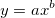
|
| Beta(x,y0,xc,A,w1,w2,w3) |
Beta-Peakfunktion zur Verwendung in Chromatographie und Spektroskopie.
|
| Boltzmann(x, A1, A2, x0, dx) |
Boltzmann-Funktion - erzeugt eine sigmoidale Kurve.
|
| dhyperbl(x,P1,P2,P3,P4,P5) |
Doppelte rechteckige Hyperbelfunktion.
|
| ExpAssoc(x,y0,A1,t1,A2,t2) |
Zweiphasige exponentielle Assoziationsgleichung.
 + A_2(1 - e^{-x/t_2})")
|
| ExpDec1(x,y0,A1,t1) |
Einphasige exponentielle Zerfallsfunktion mit Parameter Zeitkonstante.

|
| ExpDec2(x,y0,A1,t1,A2,t2) |
Zweiphasige exponentielle Zerfallsfunktion mit Parametern Zeitkonstante.

|
| ExpDec3(x,y0,A1,t1,A2,t2,A3,t3) |
Dreiphasige exponentielle Zerfallsfunktion mit Parametern Zeitkonstante.
|
| ExpGrow1(x,y0,x0,A1,t1) |
Einphasiges exponentielles Wachstum mit Zeitverschiebung, x0 sollte fest sein.
/t_1}")
|
| ExpGrow2(x, y0, x0, A1, t1, A2, t2) |
Einphasiges exponentielles Wachstum mit Zeitverschiebung, x0 sollte fest sein.
|
| Gauss(x, y0, xc, w, A) |
Flächenversion der Gaussian-Funktion.
(y0 = Verschiebung, xc = Zentrum, w = Breite, A = Fläche)
)}e^{-2(\frac{x-x_c}{w})^2}")
|
| GaussAmp(x,y0,xc,w,A) |
Amplitudenversion der Gaussian-Peakfunktion.
(y0 = Verschiebung, xc = Zentrum, w = Breite, A = Amplitude)
|
| Hyperbl(x, P1, P2) |
Hyperbel-Funktion, auch das Michaelis-Menten-Modell in Enzymkinetik.

|
| Logistic(x, A1, A2, x0, p) |
Logistische Dose Response in Pharmakologie/Chemie. Auch als 4PL oder 4PLC bezeichnet.
|
| LogNormal(x,y0,xc,w,A) |
Wahrscheinlichkeitsdichtefunktion der Zufallsvariable, deren Logarithmus normalverteilt ist.
|
| Lorentz(x, y0, xc, w, A) |
Lorentz-Peakfunktion mit Glockenform und viel breiteren Enden als die Gaussian-Funktion. (y0 = Verschiebung, xc = Zentrum, w = FWHM, A = Fläche)
|
| Poisson(x,y0,r) |
Wahrscheinlichkeitsdichtefunktion nach Poisson, eine diskrete Wahrscheinlichkeitsverteilung.

|
| Pulse(x, y0, x0, A, t1, P, t2) |
Exponentielle Pulse-Funktion (x >= x0 ? y : 0).
\\ &y=y_0+A\left( 1-e^{-\frac{x-x_0}{t_1}}\right) ^p e^{-\frac{x-x_0}{t_2}}~~(x\ge x_0)\end{aligned}")
|
| Rational0(x,a,b,c) |
Rationale Funktion mit Zähler 1. Ordnung und Nenner 1. Ordnung.
|
| Sine(x,y0,xc,w,A) |
Die Sinusiodfunktion schwingt um einen festgelegten Wert.
")
|
| Voigt(x,y0,xc,A,wG,wL) |
Faltung einer Gaussian-Funktion und einer Lorentz-Funktion.
(y0 = Verschiebung, xc = Zentrum, A = Fläche, wG = Gaussian FWHM, wL = Lorentz FWHM)
 ^2+\left( \sqrt{4\ln 2}\frac{x-x_c}{W_G}-t\right) ^2}dt\end{aligned}")
|
| Name |
Brief Description |
| Asymptotic1(x,a,b,c) |
Asymptotisches Regressionsmodell - 1. Parameterisierung.

|
| BoxLucas1(x,a,b) |
Box-Lucas-Modell, identisch mit ein-phasiger Assoziationsgleichung mit Nullverschiebung.
|
| BoxLucas1Mod(x,a,b) |
Eine Parametrisierung des Box-Lucas-Modells.
|
| BoxLucas2(x,a1,a2) |
Box-Lucas-Modell für zwei Phasen.
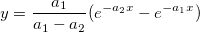
|
| Chapman(x,a,b,c) |
Chapman-Richards-Funktion zum Beschreiben der kumulativen Wachstumskurve.
^c")
|
| Exp1p1(x,A) |
Einparametrische Exponentialfunktion.
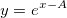
|
| Exp1p2(x,A) |
Einparametrische Exponentialfunktion.

|
| Exp1p2Md(x,B) |
Einparametrische Exponentialfunktion.
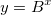
|
| Exp1P3(x,A) |
Einparametrische Exponentialfunktion.
|
| Exp1P3Md(x,B) |
Einparametrische Exponentialfunktion.
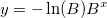
|
| Exp1P4(x,A), |
Einparametrische asymptotische Exponentialfunktion.

|
| Exp1P4Md(x,B) |
Eine weitere Form der einparametrischen asymptotischen Exponentialfunktion.
|
| Exp2P(x,a,b) |
Zweiparametrische Exponentialfunktion.

|
| Exp2PMod1(x,a,b), |
Zweiparametrische Exponentialfunktion.
|
| Exp2PMod2(x,a,b), |
Zweiparametrische Exponentialfunktion.
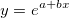
|
| Exp3P1(x,a,b,c), |
Invertierte verschobene Exponentialfunktion.
|
| Exp3P1Md(x,a,b,c), |
Eine weitere Form der invertierten verschobenen Exponentialfunktion.

|
| Exp3P2(x,a,b,c), |
Exponentialfunktion, deren Exponent ein Polynom 2. Ordnung ist.
|
| ExpAssoc(x,y0,A1,t1,A2,t2) |
Zweiphasige exponentielle Assoziationsgleichung.
|
| ExpAssoc1(x,TD,Yb,A,Tau) (2017 SR0)
|
Einphasige exponentielle Assoziationsgleichung.
}{Tau}}\right)")
|
| ExpAssoc2(x,TD1,TD2,Yb,A1,A2,Tau1,Tau2) (2017 SR0)
|
Biphasische exponentielle Assoziationsgleichung.
}{Tau_{1}}} \right ) \quad \quad \quad \quad \quad \quad\quad\quad \quad \quad x<TD_{2}\\ Yb+A_{1}\left ( 1-e^{-\frac {(x-TD_{1})}{Tau_{1}}}\right )+A_{2}\left ( 1-e^{-\frac {(x-TD_{2})}{Tau_{2}}}\right ) x\geq TD_{2} \end{matrix}\right.")
|
| nlf_ExpAssocDelay1(x,TD,Yb,A,Tau) (2017 SR0)
|
Einphasige exponentielle Assoziationsgleichung mit Plateau vor Beginn des Exponentials.
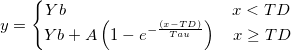
|
| ExpAssocDelay2(x,TD1,TD2,Yb,A1,A2,Tau1,Tau2) (2017 SR0)
|
Biphasische exponentielle Assoziationsgleichung mit Plateau, bevor das Exponential beginnt.
}{Tau_{1}}} \right ) \quad \quad \quad \quad \quad \quad\quad TD_{1}\leq x<TD_{2}\\ Yb+A_{1}\left ( 1-e^{-\frac {(x-TD_{1})}{Tau_{1}}}\right )+A_{2}\left ( 1-e^{-\frac {(x-TD_{2})}{Tau_{2}}}\right ) x\geq TD_{2} \end{matrix}\right.")
|
| Exponential(x,y0,A,R0) |
Exponentielle Wachstumsfunktion mit dem Parameter Ratenkonstante.

|
| ExpDec1(x,y0,A1,t1) |
Einphasige exponentielle Zerfallsfunktion mit Parameter Zeitkonstante.
|
| ExpDec2(x,y0,A1,t1,A2,t2) |
Zweiphasige exponentielle Zerfallsfunktion mit Parametern Zeitkonstante.
|
| ExpDec3(x,y0,A1,t1,A2,t2,A3,t3) |
Dreiphasige exponentielle Zerfallsfunktion mit Parametern Zeitkonstante.
|
| ExpDecay1(x,y0,x0,A1,t1) |
Einphasige exponentielle Zerfallsfunktion mit Zeitverschiebung, x0 sollte fest sein.
|
| ExpDecay2(x, y0, x0, A1, t1, A2, t2) |
Zweiphasige exponentielle Zerfallsfunktion mit Zeitverschiebung, x0 sollte fest sein.
/t_1} + A_2e^{-(x-x_0)/t_2}")
|
| ExpDecay3(x,y0,x0,A1,t1,A2,t2,A3,t3) |
Dreiphasige exponentielle Zerfallsfunktion mit Zeitverschiebung, x0 sollte fest sein.
|
| ExpGro1(x,y0,A1,t1) |
Einphasige exponentielle Wachstumsfunktion mit Parameter Zeitkonstante.
|
| ExpGro2(x,y0,A1,t1,A2,t2) |
Two-phase exponential growth function with time constant parameters.

|
| ExpGro3(x,y0,A1,t1,A2,t2,A3,t3) |
Dreiphasige exponentielle Wachstumsfunktion mit Parametern Zeitkonstante.
|
| ExpGrow1(x,y0,x0,A1,t1) |
Einphasiges exponentielles Wachstum mit Zeitverschiebung, x0 sollte fest sein.
|
| ExpGrow2(x, y0, x0, A1, t1, A2, t2) |
Einphasiges exponentielles Wachstum mit Zeitverschiebung, x0 sollte fest sein.
|
| ExpGrow3Dec2(x,y0,xc,Ag1,tg1,Ag2,tg2,Ag3,tg3,Ad1,td1,Ad2,td2) (2015 SR0)
|
Exponentielle Funktion mit drei Wachstums- und zwei Zerfallsphasen.
x_{c} \end{matrix}\right." alt="y=\left\{\begin{matrix} y_{0}+A_{d1}+A_{d2}\qquad \qquad \qquad \qquad \qquad \qquad \qquad \\+A_{g1}\left ( e^{-x_{c}/t_{g1}}-e^{-x/t_{g1}} \right )\qquad\qquad\qquad\qquad\qquad\\+A_{g2}\left ( e^{-x_{c}/t_{g2}}-e^{-x/t_{g2}} \right )\qquad \qquad \qquad \qquad \qquad \\+A_{g3}\left ( e^{-x_{c}/t_{g3}}-e^{-x/t_{g3}} \right )\qquad \qquad \qquad \quad x\leq x_{c}\\ y_{0}+A_{d1}e^{-\left ( x-x_{c} \right )/t_{d1}}+A_{d2}e^{-\left ( x-x_{c} \right )/t_{d2}}\qquad x>x_{c} \end{matrix}\right." class="tex"/>
|
| ExpGrowDec(x,y0,xc,Ag,tg,Ad,td) (2015 SR0)
|
Exponentialfunktion mit einer Wachstums- und einer Zerfallsphase.
 \quad x\leq x_{c}\\ y_{0}+A_{d}e^{-\left ( x-x_{c} \right )/t_{d}}\qquad \qquad\qquad \quad x>x_{c} \end{matrix}\right.")
|
| ExpLinear(x,p1,p2,p3,p4) |
Exponential-Linear-Kombination.
|
| Langevin(x,y0,xc,C) |
Langevin-Funktion verwendet in Paramagnetismus mit drei Parametern.
 -\frac 1{x-x_c}\right) \\ &\coth z=\frac{e^z+e^{-z}}{e^z-e^{-z}}\end{aligned}")
|
| LangevinMod(x,y0,xc,C,s) (2015 SR0)
|
Langevin-Funktion mit modifizierter Skala.
 -\frac {s}{x-x_c}\right)")

|
| PIPlatt(x,Pm,alpha) (2017 SR0)
|
Modell der Photosynthese vs. Strahlungskurve nach Platt.
")
|
| PIPlatt2(x,Ps,alpha,beta) (2017 SR0)
|
Modell der Photosynthese vs. Strahlungskurve mit Photoinhibition nach Platt
e^{-\frac {beta\cdot x}{P_{s}}}")
|
| PIWebb(x,Pm,alpha) (2017 SR0)
|
Modell der Photosynthese vs. Strahlungskurve nach Webb
|
| MnMolecular(x,A,xc,k), |
Monomolekulares Wachstumsmodell.
|
| MnMolecular1(x,A1,A2,k) |
Eine weitere Form des monomolekularen Wachstumsmodells.

|
| Shah(x,a,b,c,r) |
Exponentielle Zerfallsfunktion kombiniert mit einer linearen Funktion.

|
| Stirling(x,a,b,k) |
Exponentielle Wachstumsfunktion mit Steigung bei null für Parameter.
")
|
| YldFert(x,a,b,r) |
Ertrag-Dünger-Modell in der Landwirtschaft und Lernkurve in der Psychologie.

|
| YldFert1(x,a,b,k) |
Ertrag-Dünger-Modell in der Landwirtschaft und Lernkurve in der Psychologie.
|
| Name |
Brief Description |
| BiDoseResp(x,A1,A2,LOGx01,LOGx02,h1,h2,p) |
Biphasische Dose-Response-Funktion.
![\begin{aligned}y=&A_1+(A_2-A_1)\bigg[\frac{p}{1+10^{(LOGx01-x)h1}}+\\ &\frac{1-p}{1+10^{(LOGx02-x)h2}}\bigg]\end{aligned}](../images/LabTalk-Supported_Functions/math-5a931673f336d3539f282df4fd1d9752.png "\begin{aligned}y=&A_1+(A_2-A_1)\bigg[\frac{p}{1+10^{(LOGx01-x)h1}}+\\ &\frac{1-p}{1+10^{(LOGx02-x)h2}}\bigg]\end{aligned}")
|
| BiHill(x,Pm,Ka,Ki,Ha,Hi) (2015 SR0)
|
Biphasische Hill-Gleichung.
![y=\frac{P_{m}}{[1+(\frac{K_{a}}{x})^{H_{a}}][1+(\frac{x}{K_{i}})^{H_{i}}]}](../images/LabTalk-Supported_Functions/math-ce7a5e8d7f9f7b024ec8fa9326a65009.png "y=\frac{P_{m}}{[1+(\frac{K_{a}}{x})^{H_{a}}][1+(\frac{x}{K_{i}})^{H_{i}}]}")
|
| BoltzIV(x,vhalf,dx,gmax,vrev) |
Transformierte Boltzmann-Funktion für IV-Daten.
\cdot gmax }{1+e^{(x-vhalf)/dx}}")
|
| Boltzmann(x, A1, A2, x0, dx) |
Boltzmann-Funktion - erzeugt eine sigmoidale Kurve.
|
| DoseResp(x,A1,A2,LOGx0,p) |
Dose-Response-Kurve mit variabler Hill-Steigung gegeben durch Parameter 'p'.
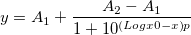
|
| DoubleBoltzmann(x,y0,A,frac,x01,x02,k1,k2) |
Doppelte Boltzmann-Funktion, Summe von zwei Boltzmann-Funktionen.
![y=y_0+A\left[\frac{p}{1+e^{\frac{x-x_{01}}{k_1}}}+\frac{1-p}{1+e^{\frac{x-x_{02}}{k_2}}}\right]](../images/LabTalk-Supported_Functions/math-649e5dcc558a3cbe663ecabcca96fc0e.png "y=y_0+A\left[\frac{p}{1+e^{\frac{x-x_{01}}{k_1}}}+\frac{1-p}{1+e^{\frac{x-x_{02}}{k_2}}}\right]")
|
| Hill(x,Vmax,k,n) |
Hill-Funktion zum Bestimmen der Ligandkonzentration und maximale Anzahl der Bindungsstellen.
|
| Hill1(x,START,END,k,n) |
Modifizierte Hill-Funktion mit Verschiebung.
|
| Logistic(x, A1, A2, x0, p) |
Logistische Dose Response in Pharmakologie/Chemie. Auch als 4PL oder 4PLC bezeichnet.
|
| Logistic5(x,Amin,Amax,x0,h,s) |
Five parameters logistic function. Auch als 5PL oder 5PLC bezeichnet.
|
| MichaelisMenten(x,Vmax,Km) |
Michaelis-Menten-Funktion zum Beschreiben der Beziehung von der Konzentration des Substrats und der Enzymgeschwindigkeit.
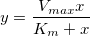
|
| SGompertz(x,a,xc,k) |
Gompertz-Wachstumsmodell für Populationsuntersuchungen, Tierwachstum.
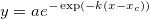
|
| Slogistic1(x,a,xc,k) |
Sigmoidale logistische Funktion, Typ 1.
 }}")
|
| SLogistic2(x,y0,a,Wmax) |
Sigmoidale logistische Funktion, Typ 2.

|
| SLogistic3(x,a,b,k) |
Sigmoidale logistische Funktion, Typ 3.
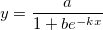
|
| SRichards1(x,a,xc,d,k) |
Sigmoidale Richards-Funktion, Typ 1.
![y=\left[ a^{1-d}-e^{-k\left( x-x_c\right) }\right] ^{1/\left( 1-d\right) },d<1](../images/LabTalk-Supported_Functions/math-2cef129b1d404b1a78cbef3fef041d59.png "y=\left[ a^{1-d}-e^{-k\left( x-x_c\right) }\right] ^{1/\left( 1-d\right) },d<1")
![y=\left[ a^{1-d}+e^{-k\left( x-x_c\right) }\right] ^{1/\left( 1-d\right) },d>1](../images/LabTalk-Supported_Functions/math-e2d761428ae5521d47b9f95878bad13c.png "y=\left[ a^{1-d}+e^{-k\left( x-x_c\right) }\right] ^{1/\left( 1-d\right) },d>1")
|
| SRichards2(x,a,xc,d,k) |
Sigmoidale Richards-Funktion, Typ 2.
![y=a\left[ 1+\left( d-1\right) e^{-k\left( x-x_c\right) }\right] ^{1/\left( 1-d\right) },d\neq 1](../images/LabTalk-Supported_Functions/math-e5c7adcfd74d6710ffd6a0ca10d00c76.png "y=a\left[ 1+\left( d-1\right) e^{-k\left( x-x_c\right) }\right] ^{1/\left( 1-d\right) },d\neq 1")
|
| SWeibull1(x,A,xc,d,k) |
Sigmoidale Weibull-Funktion, Typ 1.
|
| SWeibull2(x,a,b,d,k) |
Sigmoidale Weibull-Funktion, Typ 2.
 e^{-\left( kx\right) ^d}")
|
| Name |
Brief Description |
| Asym2Sig(x,y0,xc,A,w1,w2,w3) |
Asymmetrische doppelte Sigmoidalfunktion.
")
|
| Beta(x,y0,xc,A,w1,w2,w3) |
Beta-Peakfunktion zur Verwendung in Chromatographie und Spektroskopie.
![\begin{aligned}y=&y_0+A\left[1+\left(\frac{w_2+w_3-2}{w_2-1}\right)\left(\frac{x-x_c}{w_1}\right)\right]^{w_2-1}\\&\cdot\left[1-\left(\frac{w_2+w_3-2}{w_3-1}\right)\left(\frac{x-x_c}{w_1}\right)\right]^{w_3-1}\end{aligned}](../images/LabTalk-Supported_Functions/math-076b4d5daaea23eccbea1ff441b581bc.png "\begin{aligned}y=&y_0+A\left[1+\left(\frac{w_2+w_3-2}{w_2-1}\right)\left(\frac{x-x_c}{w_1}\right)\right]^{w_2-1}\\&\cdot\left[1-\left(\frac{w_2+w_3-2}{w_3-1}\right)\left(\frac{x-x_c}{w_1}\right)\right]^{w_3-1}\end{aligned}")
|
| Bigaussian(x,y0,xc,H,w1,w2) |
Bi-Gaussian-Peakfunktion verwendet zum Anpassen asymmetrischer Peaks.
|
| CCE(x,y0,xc1,A,w,k2,xc2,B,k3,xc3) |
Chesler-Cram-Peakfunktion zur Verwendung in der Chromatographie.
|
| ECS(x,y0,xc,A,w,a3,a4) |
Edgeworth-Cramer-Peakfunktion zur Verwendung in der Chromatographie.
+\frac{a_4}{4!}(z^4-\\ &6z^3+3)+\frac{10a_3^2}{6!}\left(z^6-15z^4+45z^2-15\right)\bigg)\\ z=&\frac{x-x_c}w\end{aligned}")
|
| Extreme(x,y0,xc,w,A) |
Besonderer Fall von Funktion der Extreme, Wahrscheinlichkeitsdichtefunktion nach Gumbel.

|
| Gauss(x, y0, xc, w, A) |
Flächenversion der Gaussian-Funktion.
(y0 = Verschiebung, xc = Zentrum, w = Breite, A = Fläche)
|
| GaussAmp(x,y0,xc,w,A) |
Amplitudenversion der Gaussian-Peakfunktion.
(y0 = Verschiebung, xc = Zentrum, w = Breite, A = Amplitude)
|
| Gaussian(x,y0,xc,A,w) |
FWHM-Version der Gaussian-Funktion.
(y0 = Basis, xc = Zentrum, A = Fläche, w = FWHM)
(x-x_c)^2}{w^2}}}{w \sqrt{\frac{\pi}{4ln(2)}}}")
|
| GaussMod(x,y0,A,xc,w,t0) |
Exponentiell modifizierte Gaussian-Peakfunktion (EMG) zur Verwendung in der Chromatographie.
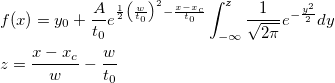
|
| GCAS(x,y0,xc,A,w,a3,a4) |
Gram-Charlier-Peakfunktion zur Verwendung in der Chromatographie.
|
| Giddings(x,y0,xc,w,A) |
Giddings-Peakfunktion zur Verwendung in der Chromatographie.
 e^{\frac{-x-x_c}w}")
|
| InvsPoly(x,y0,xc,w,A,A1,A2,A3) |
Inverse polynomielle Peakfunktion mit Zentrum.
|
| Laplace(x,y0,a,b) |
Wahrscheinlichkeitsdichtefunktion nach Laplace.

|
| Logistpk(x,y0,xc,w,A) |
Logistische Peakfunktion, aich als Hubbert-Funktion bezeichnet.
 ^2}")
|
| LogNormal(x,y0,xc,w,A) |
Wahrscheinlichkeitsdichtefunktion der Zufallsvariable, deren Logarithmus normalverteilt ist.
![y=y_0+\frac A{\sqrt{2\pi }wx}e^{\frac{-\left[ \ln \frac x{xc}\right] ^2}{2w^2}}](../images/LabTalk-Supported_Functions/math-e98dcb616116ac2349df7544a55b124f.png "y=y_0+\frac A{\sqrt{2\pi }wx}e^{\frac{-\left[ \ln \frac x{xc}\right] ^2}{2w^2}}")
|
| Lorentz(x, y0, xc, w, A) |
Lorentz-Peakfunktion mit Glockenform und viel breiteren Enden als die Gaussian-Funktion.
(y0 = Verschiebung, xc = Zentrum, w = FWHM, A = Fläche)
^2 + w^2}\right)")
|
| PearsonIV(x,y0,A,m,v,alpha,lam) |
Pearson-Verteilung Typ IV für negative Diskriminanten, geeignet zum Modellieren von Pull-Verteilungen.
\frac{1}{2}\end{aligned}" alt="\begin{aligned}&y=y_0+Ak\left[1+\left(\frac{x-\lambda\!}{\alpha\!}\right)\right]^{-m}e^{-v\tan^{-1}\left(\frac{x-\lambda\!}{\alpha\!}\right) } \\ &k=\frac{2^{2m-2}|\Gamma\!\left(m+iv/2\right)|^2}{\pi\!\alpha\!\Gamma\!\left(2m-1\right)}, m>\frac{1}{2}\end{aligned}" class="tex"/>
|
| PearsonVII(x,y0,xc,A,w,m) |
Die Pearson-Peakfunktion Typ VII ist eine potenzierte Lorentz-Funktion.
|
| PsdVoigt1(x,y0,xc,A,w,mu) |
Pseudo-Voigt-Funktion, lineare Kombination der Gaussian-Funktion und Lorentz-Funktion.
(y0 = Verschiebung, xc = Zentrum, A = Fläche, w = FWHM, mu = Profilformfaktor)
|
| PsdVoigt2(x,y0,xc,A,wG,wL,mu) |
Pseudo-Voigt-Funktion, lineare Kombination von Gaussian und Lorentz mit unterschiedlicher FWHM.
(y0 = Verschiebung, xc = Zentrum, A = Fläche, wG = Gaussian FWHM, wL=Lorentz FWHM, mu = Profilformfaktor)
![\begin{aligned}y=&y_0+A\bigg[ m_u\frac 2\pi \frac{w_L}{4\left( x-x_c\right) ^2+w_L^2}+\\ &\left( 1-m_u\right) \frac{\sqrt{4\ln2}}{\sqrt{\pi}w_G}e^{-\frac{4\ln 2}{w_G^2}\left( x-x_c\right) ^2}\bigg] \end{aligned}](../images/LabTalk-Supported_Functions/math-71ad34b7a8ff4400fafbd7187d8bc5ff.png "\begin{aligned}y=&y_0+A\bigg[ m_u\frac 2\pi \frac{w_L}{4\left( x-x_c\right) ^2+w_L^2}+\\ &\left( 1-m_u\right) \frac{\sqrt{4\ln2}}{\sqrt{\pi}w_G}e^{-\frac{4\ln 2}{w_G^2}\left( x-x_c\right) ^2}\bigg] \end{aligned}")
|
| Voigt(x,y0,xc,A,wG,wL) |
Faltung einer Gaussian-Funktion (wG für FWHM) und einer Lorentzian-Funktion.
 ^2+\left( \sqrt{4\ln 2}\frac{x-x_c}{W_G}-t\right) ^2}dt\end{aligned}")
|
| Weibull3(x,y0,xc,A,w1,w2) |
Amplitudenversion der Weibull-Peakfunktion.
![\begin{aligned}S&=\frac{x-x_c}{w_1}+\left( \frac{w_2-1}{w_2}\right) ^{\frac 1{w_2}}\\ y&=y_0+A\left( \frac{w_2-1}{w_2}\right) ^{\frac{1-w_2}{w_2}}\left[ S\right] ^{w_2-1}e^{-\left[ S\right] ^{w_2}+\left( \frac{w_2-1}{w_2}\right) }\end{aligned}](../images/LabTalk-Supported_Functions/math-508a00fe65b3a935b87f1c9096d0656a.png "\begin{aligned}S&=\frac{x-x_c}{w_1}+\left( \frac{w_2-1}{w_2}\right) ^{\frac 1{w_2}}\\ y&=y_0+A\left( \frac{w_2-1}{w_2}\right) ^{\frac{1-w_2}{w_2}}\left[ S\right] ^{w_2-1}e^{-\left[ S\right] ^{w_2}+\left( \frac{w_2-1}{w_2}\right) }\end{aligned}")
|
| Name |
Brief Description |
| Chebyshev2D(x,y,z0,A1,A2,B1,B2,C1) |
Tschebyschow-Polynome
 =\cos \left( na\cos \left( x\right) \right) \\ &T_n\left( y\right) =\cos \left( na\cos \left( y\right) \right) \\ &-1\leq x\leq 1, ~-1\leq y\leq 1\end{aligned}")
|
| Cosine(x,y,z0,A1,A2,B1,B2,C1) |
Cosinus-Polynome
|
| DoseResp2D(x,y,z0,B,C,D,E,F) |
Nichtlineare logistische Dose-Response-Funktion
![z=z_0+\frac B{\left[ 1+\left( \frac xC\right) ^{-D}\right] \left[ 1+\left( \frac yE\right) ^{-F}\right] }](../images/LabTalk-Supported_Functions/math-f62653f29cbc689e720bbe0fe5cbadb4.png "z=z_0+\frac B{\left[ 1+\left( \frac xC\right) ^{-D}\right] \left[ 1+\left( \frac yE\right) ^{-F}\right] }")
|
| Exponential2D(x,y,z0,B,C,D) |
Exponentielle 2D-Zerfallsfunktion.
")
|
| Extreme2D(x,y,z0,B,C,D,E,F) |
Nichtlineare Extremwertfunktion.
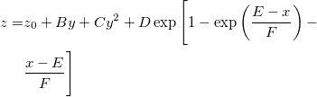
|
| ExtremeCum(x,y,z0,B,C,D,E,F,G,H) |
Nichtlineare kumulative Extremwertfunktion.

|
| Fourier2D(x,y,z0,a,b,c,d,w1,w2) |
Summe von Sinus- und Cosinusfunktionen der zwei Variablen.
 +b\sin \left( \frac x{w_1}\right) +c\cos \left( \frac y{w_2}\right) +\\ &d\sin \left( \frac y{w_2}\right)\end{aligned}")
|
| Gauss2D(x,y,z0,A,xc,w1,yc,w2) |
Die Gaussian-Oberfläche.
 ^2-\frac 12\left( \frac{y-y_c}{w_2}\right) ^2\right\}")
|
| GaussCum(x,y,z0,B,C,D,E,F) |
Kumulative 2D-Gaussian-Funktion.
|
| Gaussian2D(x,y,z0,A,xc,w1,yc,w2,theta) |
Die gedrehte Gaussian-Oberfläche.
+y\sin(\theta)-x_c\cos(\theta)+y_c\sin(\theta)}{w_1}\bigg)^2-\\ &\frac 12\bigg(\frac{-x\sin(\theta)+y\cos(\theta)+x_c\sin(\theta)-y_c\cos(\theta)}{w_2}\bigg)^2\bigg\}\end{aligned}")
|
| LogisticCum(x,y,z0,B,C,D,E,F) |
Nichtlineare Sigmoidfunktion (Logistisch Kumulativ)
|
| LogNormal2D(x,y,z0,B,C,D,E,F,G,H) |
2D-Log-Normal-Funktion.
 ^2}{2D^2}\right\} +E\exp \left\{ -\frac{\left( \ln \frac yF\right) ^2}{2G^2}\right\}+\\ &H\exp \left\{ -\frac{\left( \ln \frac xC\right) ^2}{2D^2}-\frac{\left( \ln \frac yF\right)^2 }{2G^2}\right\}\end{aligned}")
|
| Lorentz2D(x,y,z0,A,xc,w1,yc,w2) |
Nichtlineare Sigmoidfunktion (Logistisch Kumulativ)
![z=z_0+\frac A{\left[ 1+\left( \frac{x-x_c}{w_1}\right) ^2\right] \left[ 1+\left( \frac{y-y_c}{w_2}\right) ^2\right] }](../images/LabTalk-Supported_Functions/math-285d961d27715d22e87d343a2be517aa.png "z=z_0+\frac A{\left[ 1+\left( \frac{x-x_c}{w_1}\right) ^2\right] \left[ 1+\left( \frac{y-y_c}{w_2}\right) ^2\right] }")
|
| Parabola2D(x,y,z0,a,b,c,d) |
2D-Parabelfunktion ohne xy-Term.

|
| Plane(x,y,z0,a,b) |
Die Ebenenoberfläche.

|
| Poly2D(x,y,z0,a,b,c,d,f) |
Quadratisches 2D-Polynom.
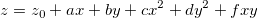
|
| Polynomial2D(x,y,z0,A1,A2,A3,A4,A5,B1,B2,B3,B4,B5) |
2D-Polynom 5. Ordnung ohne gekreuzte Terme.

|
| Power2D(x,y,z0,B,C,D,E,F) |
2D-Potenzfunktion.

|
| Rational2D(x,y,z0,A01,B01,B02,B03,A1,A2,A3,B1,B2) |
2D-Rational-Funktion mit Zähler 3. Ordnung und Nenner 3. Ordnung.

|
| RationalTaylor(x,y,z0,A01,B01,B02,C02,A1,A2,B1,B2,C2) |
2D-Taylor-Rational-Funktionen.
|
| Voigt2D(x,y,z0,A,xc,w1,yc,w2,mu) |
Die Voigt-Oberfläche.
![\begin{aligned}z=&z_0+A\Bigg[\frac{\mu\!}{\left[1+\left(\frac{x-x_c}{w_1}\right)^2\right]\left[1+\left(\frac{y-y_c}{w_2}\right)^2\right]} +\\ &(1-\mu\!)\exp\left(-\frac{1}{2}\left(\frac{x-x_c}{w_1}\right)^2-\frac{1}{2}\left(\frac{y-y_c}{w_2}\right)^2\right)\Bigg]\end{aligned}](../images/LabTalk-Supported_Functions/math-4dc3ec1c5687631274f03b0d75c247b4.png "\begin{aligned}z=&z_0+A\Bigg[\frac{\mu\!}{\left[1+\left(\frac{x-x_c}{w_1}\right)^2\right]\left[1+\left(\frac{y-y_c}{w_2}\right)^2\right]} +\\ &(1-\mu\!)\exp\left(-\frac{1}{2}\left(\frac{x-x_c}{w_1}\right)^2-\frac{1}{2}\left(\frac{y-y_c}{w_2}\right)^2\right)\Bigg]\end{aligned}")
|
| Voigt2DMod(x,y,z0,A,xc,w1,yc,w2,mu) (2016 SR0)
|
Die Voigt-Oberfläche mit Volumen als Parameter.
|
| Name |
Brief Description |
| Asym2Sig(x,y0,xc,A,w1,w2,w3) |
Asymmetrische doppelte Sigmoidalfunktion.
")
|
| Bigaussian(x,y0,xc,H,w1,w2) |
Bi-Gaussian-Peakfunktion verwendet zum Anpassen asymmetrischer Peaks.
|
| BWF(x,y0,xc,H,w,q) |
Linienform nach Breit-Wigner-Fano (BWF)
|
| CCE(x,y0,xc1,A,w,k2,xc2,B,k3,xc3) |
Chesler-Cram-Peakfunktion zur Verwendung in der Chromatographie.
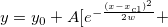 ![B(1-0.5(1-\tanh (k_2(x-x_{c2}))))e^{-0.5k_3(|x-x_{c3}|+(x-x_{c3}))}]](../images/LabTalk-Supported_Functions/math-57b6cef7f7567fd6ee984db95247d48c.png "B(1-0.5(1-\tanh (k_2(x-x_{c2}))))e^{-0.5k_3(|x-x_{c3}|+(x-x_{c3}))}]")
|
| ConsGaussian(x,y0, xc, A, w1, w2) |
Beschränkte Gaussian-Funktion
 ^2}{\left( w_1+w_2x_c\right)^2 }}}{\left( w_1+w_2x_c\right) \sqrt{2\pi }}#")
|
| DoniachSunjic(x,y0, xc, H, w, a) |
Doniach-Sunjic-Funktion
 \arctan \left( \frac{x-x_c}w\right) \right) }{\sqrt{\left( w^2+\left( x-x_c\right) ^2\right) ^{\left( 1-a\right) }}}")
|
| ECS(x,y0,xc,A,w,a3,a4) |
Edgeworth-Cramer-Peakfunktion zur Verwendung in der Chromatographie.
|
| FraserSuzuki(x,y0,xc,A,sig) |
Asymmetrische Fraser-Suzuki-Funktion.
 ^2}{2sigL}}}{sig\sqrt{2\pi }}") ")
 ^2}{2sigR}}}{sig\sqrt{2\pi }}") 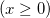 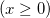
wobei ") , ,")
|
| Gauss(x, y0, xc, w, A) |
Flächenversion der Gaussian-Funktion.
(y0 = Verschiebung, xc = Zentrum, w = Breite, A = Fläche)
|
| GaussAmp(x,y0,xc,w,A) |
Amplitudenversion der Gaussian-Peakfunktion.
(y0 = Verschiebung, xc = Zentrum, w = Breite, A = Amplitude)
|
| Gaussian(x,y0,xc,A,w) |
FWHM-Version der Gaussian-Funktion.
(y0 = Basis, xc = Zentrum, A = Fläche, w = FWHM)
|
| Gaussian_LorenCross(x,y0, xc, A, w, s) |
Gaussian-Lorentzian-Kreuzproduktfunktion.
|
| GaussMod(x,y0,A,xc,w,t0) |
Exponentiell modifizierte Gaussian-Peakfunktion (EMG) zur Verwendung in der Chromatographie.
|
| GCAS(x,y0,xc,A,w,a3,a4) |
Gram-Charlier-Peakfunktion zur Verwendung in der Chromatographie.
 =y_0+\frac A{w\sqrt{2\pi }}e^{\frac{-z^2}2}\left( 1+\left|\sum_{i=3}^4\frac{a_i}{i!}H_i\left( z\right)\right| \right)\\ &z=\frac{x-x_c}w, H_3=z^3-3z, H_4=z^4-6z^3+3\end{aligned}")
|
| HVL(x, y0, xc, A, w, d) |
Haaroff-Van-der-Linde-Funktion.
 ^2}{w^2}}w}{d\sqrt{2\pi }x_c\left( e^{1-\frac{dx_c}{w^2}}+0.5\left( 1+Erf\left( \frac{x-x_c}{w\sqrt{2}}\right) \right) \right) }")
|
| InvsPoly(x,y0,xc,w,A,A1,A2,A3) |
Inverse polynomielle Peakfunktion mit Zentrum.
|
| LogNormal(x,y0,xc,w,A) |
Wahrscheinlichkeitsdichtefunktion der Zufallsvariable, deren Logarithmus normalverteilt ist.
|
| Lorentz(x, y0, xc, w, A) |
Lorentz-Peakfunktion mit Glockenform und viel breiteren Enden als die Gaussian-Funktion.
(y0 = Verschiebung, xc = Zentrum, w = FWHM, A = Fläche)
|
| PearsonVII(x,y0,xc,A,w,m) |
Die Pearson-Peakfunktion Typ VII ist eine potenzierte Lorentz-Funktion.
|
| PsdVoigt1(x,y0,xc,A,w,mu) |
Pseudo-Voigt-Funktion, lineare Kombination der Gaussian-Funktion und Lorentz-Funktion.
(y0 = Verschiebung, xc = Zentrum, A = Fläche, w = FWHM, mu = Profilformfaktor)
|
| PsdVoigt2(x,y0,xc,A,wG,wL,mu) |
Pseudo-Voigt-Funktion, lineare Kombination von Gaussian und Lorentz mit unterschiedlicher FWHM.
(y0 = Verschiebung, xc = Zentrum, A = Fläche, wG = Gaussian FWHM, wL=Lorentz FWHM, mu = Profilformfaktor)
![\begin{aligned}y=&y_0+A\bigg[ m_u\frac 2\pi \frac{w_L}{4\left( x-x_c\right) ^2+w_L^2}+\\ &\left( 1-m_u\right) \frac{\sqrt{4\ln 2}}{\sqrt{\pi}w_G}e^{-\frac{4\ln 2}{w_G^2}\left( x-x_c\right) ^2}\bigg]\end{aligned}](../images/LabTalk-Supported_Functions/math-a7026ad226684f46e4581ae2a80929b1.png "\begin{aligned}y=&y_0+A\bigg[ m_u\frac 2\pi \frac{w_L}{4\left( x-x_c\right) ^2+w_L^2}+\\ &\left( 1-m_u\right) \frac{\sqrt{4\ln 2}}{\sqrt{\pi}w_G}e^{-\frac{4\ln 2}{w_G^2}\left( x-x_c\right) ^2}\bigg]\end{aligned}")
|
| Pulse(x,y0,x0,A,t1,P,t2) |
Exponentielle Pulse-Funktion (x >= x0 ? y : 0).
|
| SchulzFlory(x,y0,xc,w,A) |
Schulz-Flory-Verteilungsfunktion zum Beschreiben von relativen Verhältnissen der Polymere nach einem Polymerisationsprozess.
^{\frac{x_c}{w}}")
|
| Sine(x,xc,w,A,y0) |
Die Sinusiodfunktion schwingt um einen festgelegten Wert.
")
|
| SineDamp(x,y0,xc,w,t0,A) |
Gedämpfte Sinusoid, eine Sinusfunktion, deren Amplitude mit der Zeit zerfällt.
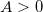0" alt="A>0" class="tex"/>，  ， ， 
|
| Sinesqr(x,xc,w,A,y0) |
Sinus-Quadrat-Funktion.
|
| Voigt(x,y0,xc,A,wG,wL) |
Faltung einer Gaussian-Funktion (wG für FWHM) und einer Lorentzian-Funktion.
(y0 = Verschiebung, xc = Zentrum, A = Fläche, wG = Gaussian FWHM, wL = Lorentz FWHM)
 ^2+\left( \sqrt{4\ln 2}\frac{x-x_c}{W_G}-t\right) ^2}dt")
|
| Weibull3(x,y0,xc,A,w1,w2) |
Amplitudenversion der Weibull-Peakfunktion.
 ^{\frac 1{w_2}}")
![y=y_0+A\left( \frac{w_2-1}{w_2}\right) ^{\frac{1-w_2}{w_2}}\left[ S\right] ^{w_2-1}e^{-\left[ S\right] ^{w_2}+\left( \frac{w_2-1}{w_2}\right) }](../images/LabTalk-Supported_Functions/math-2566aad3afe36e3faadff13e4072dcd8.png "y=y_0+A\left( \frac{w_2-1}{w_2}\right) ^{\frac{1-w_2}{w_2}}\left[ S\right] ^{w_2-1}e^{-\left[ S\right] ^{w_2}+\left( \frac{w_2-1}{w_2}\right) }")
|
| Name |
Brief Description |
| Exponential(x,y0,A,R0) |
Exponentielle Wachstumsfunktion mit dem Parameter Ratenkonstante.
|
| ExponentialCDF(x,y0,A,mu) (2016 SR0)
|
Exponentielle kumulative Verteilungsfunktion
|
| Extreme(x,y0,xc,w,A) |
Besonderer Fall von Funktion der Extreme, Wahrscheinlichkeitsdichtefunktion nach Gumbel.
|
| GammaCDF(x,y0,A1,a,b) (2016 SR0)
|
Kumulative Gamma-Verteilungsfunktion
}\int_{0}^{x}t^{a-1}e^{-\frac{t}{b}}dt\; \; \; x>0")
|
| Gauss(x, y0, xc, w, A) |
Flächenversion der Gaussian-Funktion.
(y0 = Verschiebung, xc = Zentrum, w = Breite, A = Fläche)
|
| GaussAmp(x,y0,xc,w,A) |
Amplitudenversion der Gaussian-Peakfunktion.
(y0 = Verschiebung, xc = Zentrum, w = Breite, A = Amplitude)
|
| Gumbel(x,a,b) |
Transformierte kumulative Gumbel-Verteilungsfunktion.
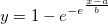
|
| Laplace(x,y0,a,b) |
Wahrscheinlichkeitsdichtefunktion nach Laplace.
|
| Logistic(x, A1, A2, x0, p) |
Logistische Dose Response in Pharmakologie/Chemie. Auch als 4PL oder 4PLC bezeichnet.
|
| LogNormal(x,y0,xc,w,A) |
Wahrscheinlichkeitsdichtefunktion der Zufallsvariable, deren Logarithmus normalverteilt ist.
|
| LognormalCDF(x,y0,A,xc,w) (2016 SR0)
|
Kumulative LognormalCDF-Verteilungsfunktion.
|
| Lorentz(x, y0, xc, w, A) |
Lorentz-Peakfunktion mit Glockenform und viel breiteren Enden als die Gaussian-Funktion.
(y0 = Verschiebung, xc = Zentrum, w = FWHM, A = Fläche)
|
| NormalCDF(x,y0,A,xc,w) |
Kumulative Normalverteilungsfunktion
(y0 = Verschiebung, A = Amplitude, xc = Mittelwert, w = Standardabweichung)
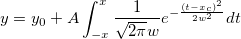
|
| Pareto(x,A) |
Kumulative Pareto-Verteilungsfunktion mit einem Parameter, eine Potenzgesetzwahrscheinlichkeitsverteilung.

|
| Pareto2(x,a,b) |
Pareto-Funktion mit zwei Parametern.
 ^a")
|
| PearsonIV(x,y0,A,m,v,alpha,lam) |
Pearson-Verteilung Typ IV für negative Diskriminanten, geeignet zum Modellieren von Pull-Verteilungen.
\frac{1}{2}\end{aligned}" alt="\begin{aligned}&y=y_0+Ak\left[1+\left(\frac{x-\lambda\!}{\alpha\!}\right)\right]^{-m}e^{-v\tan^{-1}\left(\frac{x-\lambda\!}{\alpha\!}\right) } \\ &k=\frac{2^{2m-2}|\Gamma\!\left(m+iv/2\right)|^2}{\pi\!\alpha\!\Gamma\!\left(2m-1\right)}, m>\frac{1}{2}\end{aligned}" class="tex"/>
|
| Poisson(x,y0,r) |
Wahrscheinlichkeitsdichtefunktion nach Poisson, eine diskrete Wahrscheinlichkeitsverteilung.
|
| Rayleigh(x,b) |
Kumulative Rayleigh-Verteilungsfunktion

|
| Weibull(x,y0,a,r,u) |
Weibull-Wahrscheinlichkeitsdichtefunktion.
 ^{b-1}\exp \left\{-\left( \frac{x-c}a\right) ^b\right\}")
|
| WeibullCDF(x,y0,A1,a,b) (2016 SR0)
|
Kumulative Weibull-Verteilungsfunktion 0\\ y_0 & x\leq 0 \end{cases}" alt="y=\begin{cases} y_0+A_1\int_{0}^{x}ba^{-b}t^{b-1}e^{-\left (\frac{t}{a}\right)^b}dt\\ =y_0+A_1\left ( 1- e^{-\left (\frac{x}{a}\right)^b}\right )&x>0\\ y_0 & x\leq 0 \end{cases}" class="tex"/>
|
Jede Funktion gibt entweder einen einzelnen Wert oder einen Wertebereich (einen Datensatz) aus, abhängig vom Funktionstyp und den mitgelieferten Argumenten. Wenn nicht anderweitig festgelegt, geben alle Funktionen einen Bereich aus, falls das erste Argument, das an die Funktion übergeben wird, ein Bereich ist. Wird ein Wert übergeben, geben alle Funktionen einen Wert aus.
=(x/2)^{n}\sum_{k=0}^{\infty} \frac{(-1)^{k}(x/2)^{2k}}{k!\Gamma(k+n+1)}")
 die Funktion
die Funktion = & \frac{\nu _1^{\nu_1/2}\nu _2^{\nu _2/2}\Gamma ((\nu _1+\nu _2)/2)}{\Gamma (\nu _1/2)\Gamma (\nu _2/2)}\\ & \cdot \int_0^{f_p}F^{(\nu _1-2)/2}(\nu _1F+\nu _2)^{-(\nu _1+\nu _2)/2}dF\end{aligned}")
=\frac 1{\beta ^\alpha \Gamma (\alpha )}\int_0^{g_p}G^{\alpha -1}e^{-G/\beta }dG")
-\mu\right)^2}{2\sigma^2}}dt")


-\min (x_i)}{ \hat{\sigma _e} }")

![x_p=[aln(\frac 1{1-p}]^{(\frac 1b)}I_{[0,1]}(p)](../images/LabTalk-Supported_Functions/math-ec6eae6ffd809a7050a0478ba2df12ef.png "x_p=[aln(\frac 1{1-p}]^{(\frac 1b)}I_{[0,1]}(p)")
") aus.
aus.") aus.
aus. /4(x) aus.
/4(x) aus.") aus.
aus.") aus.
aus.") aus.
aus.") aus.
aus.") aus.
aus.") aus.
aus. , x > 0. Die Approximation basiert auf Tschebyscheff-Erweiterungen.
, x > 0. Die Approximation basiert auf Tschebyscheff-Erweiterungen.=\int_0^\infty t^{x-1}e^{-t}dt") aus.
aus.") aus.
aus.=\frac 32\int_0^\infty \frac{dt}{(t+\rho )\sqrt{(t+x)(t+y)(t+z)}}") .
.=\int_0^x\cos \left( \frac \pi 2t^2\right)dt") aus.
aus.=\int_0^x\sin \left(\frac \pi 2t^2\right)dt") aus.
aus.") , 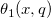,
, 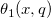, ") , oder
, oder ") für ein reales Argument x und nicht-negatives q ≤ 1.
für ein reales Argument x und nicht-negatives q ≤ 1.^2+(y-y_c)^2-r^2")
^2 + \left(\frac{y-y_c}{b}\right)^2 - 1")
}{nkT}}-1 \right)+\frac{V-I\cdot R_s}{R_{sh}}-I")
}{nkT}}-1 \right)+\frac{V+I\cdot R_s}{R_{sh}}-I_L")
 ^{1/d}}")

)")
")
")
")
\\ &y=y_{i_1}+k_2\left(x-x_{i_1}\right)~~~~~(x_{i_1}\le x<x_{i_2})\\ &y=y_{i_2}+k_3\left(x-x_{i_2}\right)~~~~~(x\ge x_{i_2})\\ &y_{i_1}=a_1+k_1x_{i_1},~ y_{i_2}=y_{i_1}+k_2\left(x_{i_2}-x_{i_1}\right) \end{aligned}")


")

^c")
^{-1/c}")


 ^b")
 ^b}")


 ^{-1}")

+b_2\left( x+a\right) ^2}")


T,\ n\in Z\\ b,\ \ x_0+\left(n+\frac{1}{2} \right )T <x<x_0+\left(n+1 \right )T,\ n\in Z \end{cases}")
T, \ n\in Z, 0<duty<1\\ b,\ \ x_0+\left(n+duty \right )T <x<x_0+\left(n+1 \right )T,\ n\in Z, 0<duty<1 \end{cases}")

}{1+10^{(x-x0\_1)h_1}}+ \frac{(A_{\max 2}-A_{\min })}{1+10^{(x0\_2-x)h_2}}")
 p}}")

^{m}}")
![y=A_{2}+(A_{1}-A_{2})[1+(tx)^{a}]^{\frac{n-1}{a}}](../images/LabTalk-Supported_Functions/math-2a5e177df5333db67ca1608b920108fd.png "y=A_{2}+(A_{1}-A_{2})[1+(tx)^{a}]^{\frac{n-1}{a}}")


+x}")
(K_\text{m}+x)}")
}}{x+\frac{K_m(1+I_c/K_i)}{1+I_c/(Alpha \cdot K_i)}}")
}")
![\begin{aligned}y=&y_0+A\bigg[ m_u\frac 2\pi \frac w{4\left( x-x_c\right) ^2+w^2}+\\ &\left( 1- m_u\right) \frac{\sqrt{4\ln 2}}{\sqrt{\pi}w}e^{-\frac{4\ln 2}{w^2}\left( x-x_c\right) ^2}\bigg] \end{aligned}](../images/LabTalk-Supported_Functions/math-054a79b30e4c7feda522b89c192979bc.png "\begin{aligned}y=&y_0+A\bigg[ m_u\frac 2\pi \frac w{4\left( x-x_c\right) ^2+w^2}+\\ &\left( 1- m_u\right) \frac{\sqrt{4\ln 2}}{\sqrt{\pi}w}e^{-\frac{4\ln 2}{w^2}\left( x-x_c\right) ^2}\bigg] \end{aligned}")
^p}")
^2 + w_2^2)}")
 + x_{0}")
 + y_{0}")


 = \frac{e^{iC}+e^{-iC}}{2}")
 .
. = e^x*(cos(y)+sin(y)*i)")
 .
. = \frac{ImLn(x+iy)}{ImLn(10)}")
\\=(x1*x2-y1*y2)+i*(x1*y2+x2*y1)")